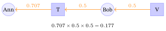
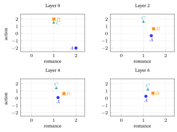
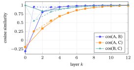
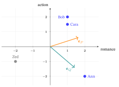
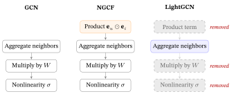

10 From Graphs to LightGCN
Graph convolution is a building block of many graph recommenders. This chapter goes from the embeddings and the dot product of the previous chapters to LightGCN, a simple graph recommender, by hand, on one tiny example.
What this chapter assumes. Linear Algebra for Machine Learning §1–§4 (vector, dot product, cosine, matrix times vector), Neural Networks & Back-propagation §3 (embedding lookup) and §6 (epoch, mini-batch), and Traditional Recommender Systems §5 (the romance/action map of taste). The Loss Functions & Regularizers chapter is optional, for §15. It does not assume graph theory (§1 starts from dots and lines), and it does not assume the losses and metrics it uses. Cross-entropy (§6) and overfitting (§14) are explained where they first appear, and Recall@20 is explained in §12. Normalized discounted cumulative gain (NDCG), a second ranking score, is only named, with a pointer to Evaluation Metrics.
1. What is a graph?
Ann liked Titanic. Bob liked Titanic and Vendetta. A computer sees two separate lists of films, yet Ann and Bob are linked through the film they share. How can we write that link down so a program can follow it? This section draws it as dots and lines.
A graph is a collection of things and the connections between them. The things are called nodes (or vertices). The connections are called edges.

A graph represents anything where relationships matter: road maps (cities and roads), molecules (atoms and bonds), the web (pages and links), and, our focus, who interacted with what on a recommendation site.
In one line: a graph is nodes plus edges, and Ann and Bob are linked by a path of \(2\) edges through Titanic.
2. Classes of graphs
Ann’s site could link people to films, or people to people, or papers to papers. Do the links point one way or both ways? Do they carry numbers? A few yes-or-no questions sort any such network, and the answers decide which model fits. This section asks them for the film site.
Five questions matter for us:
| Property | Two cases | What it means | Our film graph |
|---|---|---|---|
| Direction | undirected vs. directed | does an edge point one way (\(A\to B \ne B\to A\))? | undirected: a like links user and film both ways |
| Weights | unweighted vs. weighted | is an edge just present or absent (\(0\) or \(1\)), or does it carry a number such as a rating? | usually unweighted: a like is a \(1\), no like is a \(0\) |
| Node types | homogeneous vs. heterogeneous | one kind of node, or several? | heterogeneous: users and films |
| Partition | general vs. bipartite | are the nodes split into two groups, with edges only across? | bipartite (§3) |
| Features | attributed vs. featureless | does each node come with measured facts, such as a paper’s word counts (§6)? | featureless: only an identifier (ID) |
Other properties exist (loops, connectivity, repeated edges, change over time). This chapter does not use them: our graph has no loops (no edge from a node to itself), is connected (a path joins any two nodes), has at most one edge per pair, and is a snapshot (it does not change over time).
In one line: five yes-or-no questions place our graph: undirected, unweighted, two node types, bipartite, no features.
3. Bipartite graph
On a film site, Ann is never linked to Bob directly: both are linked to Titanic. Links run only between people and films, never person to person. This section names that shape, draws it for Ann, Bob and Cara, and counts how many edges lie between Ann and each film.
A bipartite graph is a graph whose nodes split into two separate groups, with edges only between the groups, never within one. In recommendation the groups are users and items (here films):

- An edge means this user liked this film: in the running example, rated it \(4\) or \(5\). A film someone rated low is not an edge, because a bad rating is not a signal you want to spread to that person’s neighbors (§7 applies this rule to the actual ratings). From here on, “the films Ann watched” means the films on Ann’s edges, the ones she liked.
- There is no edge between two users and none between two films.
So Ann is not connected to Bob directly, unlike the friendship graph of §1. Any relationship between two users must be inferred by walking across the film side and back.
Hops. A hop is one step along one edge. Our graph is a single path, Ann, Titanic, Bob, Vendetta, Cara, Matrix, so the hops from Ann are easy to count:
| From Ann to | Titanic | Bob | Vendetta | Cara | Matrix |
|---|---|---|---|---|---|
| hops | 1 | 2 | 3 | 4 | 5 |
In one line: edges run only between users and films, so Titanic is \(1\) hop from Ann, Bob \(2\), Vendetta \(3\), Cara \(4\) and Matrix \(5\).
4. Embeddings (and the dot product)
How can a computer hold Ann’s taste, when all it can store is numbers? Give her a short list of numbers, give every film a list too, and measure how well two lists match. This section builds those lists, and the match score, for Ann, Bob, Cara and three films.
A list of numbers is a vector. When a vector describes a node, it is that node’s embedding. Here each list has \(d=2\) numbers, the two axes of the taste map in Traditional Recommender Systems §5: how much romance, how much action. A negative number is a dislike.
| Node | romance | action |
|---|---|---|
| Ann | \(2\) | \(-2\) |
| Bob | \(1\) | \(2\) |
| Cara | \(1\) | \(1.5\) |
| Titanic | \(2\) | \(0\) |
| Vendetta | \(1\) | \(1\) |
| Matrix | \(0\) | \(2\) |

Stack the six rows into one table and you have the embedding matrix \(E\): one row per node, \(d\) columns. With \(N\) nodes, \(E \in \mathbb{R}^{N \times d}\); here \(6\times2\). Reading row \(k\) of \(E\) is the lookup of Neural Networks & Back-propagation §3.
How we use them. To guess whether Ann likes a film, take the dot product (Linear Algebra for Machine Learning §4) of the two vectors. We write \(\hat y\) (“y-hat”) for a predicted score: \[ \hat{y} = \mathbf{e}_{\text{Ann}} \cdot \mathbf{e}_{\text{Titanic}} = \sum_{j=1}^{d} e_{\text{Ann}}[j]\times e_{\text{Titanic}}[j] \]
Here \(j\) counts the \(d\) components of a vector. From §5 on, a superscript \((k)\) counts passes of the graph rule instead, so the two counters get two different letters.
| Pair | Calculation | Score | Reading |
|---|---|---|---|
| Ann \(\cdot\) Titanic | \(2\cdot2 + (-2)\cdot0\) | \(4\) | pointing roughly together: high |
| Ann \(\cdot\) Vendetta | \(2\cdot1 + (-2)\cdot1\) | \(0\) | right angle: zero |
| Ann \(\cdot\) Matrix | \(2\cdot0 + (-2)\cdot2\) | \(-4\) | pointing mostly apart: negative |
Warning. These six rows are hand-picked guesses, so that the arrows can be read. A real model does not know them: its numbers start random and training moves them so that users land near the films they like, using only the observed interactions. A random start can score a liked film badly: with \(d=4\), Ann \([0.2,-1.1,0.7,0]\) and Titanic \([-0.3,0.9,0.4,1.2]\) give \(-0.06-0.99+0.28+0=-0.77\), a “do not recommend” verdict for a film she liked. After training, the axes of a real model have no names like romance or action.
In one line: an embedding is a short list of numbers per node, and the dot product scores a match: Ann against Titanic \(4\), Vendetta \(0\), Matrix \(-4\).
5. What does “graph convolution” actually do?
Ann has watched one film, Titanic. What should the site believe about her? One natural answer is that she resembles the films around her and the people who share them. This section turns that answer into a rule that updates everyone at once, and shows how far one application of the rule reaches.
A node should be described by its neighbors (“you are the company you keep”). Graph convolution is that idea as a rule: every node replaces its vector by a weighted sum of its neighbors’ vectors, and its own old vector is not used. The weights come from the node degrees (a node’s degree is its number of edges; §7 gives the weights). They are not an exact average: they need not add up to \(1\).
Before the rule, every person and film carries an arrow, our first guess. The rule throws each person’s old arrow away and gives them a new one: a weighted mix of the arrows of the films they watched. Ann watched only Titanic, so her new arrow points like Titanic’s and is half as long as her old arrow (norm, the length of an arrow, goes from \(2.83\) to \(1.41\), §9): it swings from pointing down-right to pointing straight along romance, a turn of \(45\) degrees (an angle says how far apart two arrows point, \(0\) degrees meaning the same direction; §8 measures angles from the romance axis).
Bob watched Titanic and Vendetta, so his new arrow lies between theirs. A film is updated the same way, from the people who watched it. Afterwards each arrow says what its owner is made of: what they watched (§9 gives numbers).

Sending vectors along edges (the node that sends is the sender, the node that receives is the receiver) and summing what arrives is called message passing, or propagation. One round of it, applied to all nodes at once, is one layer. Two words are easy to mix up:
A layer is one application of the graph-convolution rule to all nodes: one stage of computation in the model. A hop is one step along an edge in the graph.

| Layer | Hop | |
|---|---|---|
| What it is | a computation step in the model | a step along an edge in the graph |
| Belongs to | the model | the graph |
| Do you choose it? | yes, a hyperparameter \(K\) (for example \(K=2\)): a setting fixed before training | no, fixed by the graph |
(This \(K\) counts layers. It has nothing to do with the \(K\) in “top-\(K\)” or in “recall at \(K\)” (defined a little further on), which counts how many items you show. Likewise, \(A\) is Ann’s initial in the figures; from §7 on it also names the adjacency matrix, and the text says which is meant.)
Each layer moves information one hop, so after \(K\) layers a node’s vector mixes the starting vectors of nodes that a walk of \(K\) steps can reach. A walk may turn back: Ann, Titanic, Ann is a walk of \(2\) steps, so her layer-2 vector contains her own start (§10 shows the numbers). The graph is bipartite, so a user’s layer-\(k\) vector is built from films’ starts when \(k\) is odd and from users’ starts when \(k\) is even.
More layers reach further: \(1\) layer reaches Ann’s films (\(1\) hop), \(2\) layers the other users who watched them, \(3\) layers those users’ other films, so Ann can be matched to a film she never saw. That is the whole point: “users like you also liked” comes from graph structure alone. Too many layers let every node reach every other, and all vectors blur together (over-smoothing, §12).
Operation versus model. A single neuron is an operation; a neural network is the model you build by stacking many of them (Neural Networks & Back-propagation §1 and §2). Graphs work the same way.
| The operation | The model | |
|---|---|---|
| Neural networks | a neuron: a weighted sum, then an activation (a bend of the result, §6) | a neural network: many neurons stacked in layers, plus a loss |
| Graphs | graph convolution: each node takes its neighbors’ weighted sum, once | a graph convolutional network (GCN): several such layers stacked and trained |
The word convolution comes from pictures: a convolutional neural network (CNN) slides a small pattern over an image and combines each patch of nearby pixels by the same rule. The graph version combines each node’s neighbors the same way; this book does not need the CNN.
A GCN adds, in its original form, a weight matrix and a nonlinearity (both in §6). LightGCN keeps only the stacked operation, a layer combination (§12), a dot product (§4) and a loss (§15). NGCF (neural graph collaborative filtering) sits between the two; §14 builds all three on one graph. Graph convolution is the ingredient, the GCN is the dish.
A node does not use its own old vector in its update. It “sees itself” only by going out to a neighbor and back, which takes two hops. (A self-loop, an edge from a node to itself, would change that; §6.)
In one line: one layer is one pass of the rule, and one pass carries information one hop: Ann needs \(3\) layers to hear from Vendetta.
6. The graph in the GCN paper vs. the recommendation graph
One model was built to sort scientific papers by topic; a film site wants to rank films for Ann. Both are networks, so what carries over from the first to the second, and what does not? This section puts the two side by side and asks which parts of the paper’s model a film site needs.
Kipf and Welling (2017) introduced the GCN layer that most later work builds on, for semi-supervised node classification: a few papers carry a topic label, and the task is to predict the topic of the rest. Three of their four data sets are citation networks (Cora, Citeseer, Pubmed); the fourth is a bipartite graph extracted from a knowledge graph, and this chapter follows the citation case. In Cora, the nodes are \(2{,}708\) papers, edges are citations, and each paper carries a bag-of-words vector: one entry for each of \(1{,}433\) vocabulary words; in the standard Cora files (Sen et al., 2008) each entry is \(0\) or \(1\) (the word is absent or present). (Our toy table below uses counts instead, to keep the arithmetic visible.)
A citation points from the citing paper to the cited one, but the paper ignores the arrow: it treats each citation as a two-way link and builds a symmetric adjacency matrix (a table of who is linked to whom, in which a link from \(P\) to \(Q\) is also one from \(Q\) to \(P\); §7), and says its framework is limited to undirected graphs. Both graphs here are therefore undirected.
Features and the matrix \(X\). A feature is a given number about a node, measured outside the model, such as how often a word occurs in a paper. Stack the features of all nodes, one row per node, and you have the feature matrix \(X\). A toy version has three papers and four words:
| Paper | neural | graph | gene | cell |
|---|---|---|---|---|
| Paper 1 (computing) | \(3\) | \(2\) | \(0\) | \(0\) |
| Paper 2 (biology) | \(0\) | \(0\) | \(4\) | \(3\) |
| Paper 3 (mixed) | \(0\) | \(2\) | \(1\) | \(3\) |
The weight matrix \(W\) mixes the four word counts into new numbers. Here \(W\) is \(4\times2\): the first new number adds neural and graph (computing-ness), the second adds gene and cell (biology-ness).
| computing-ness | biology-ness | |
|---|---|---|
| neural | \(1\) | \(0\) |
| graph | \(1\) | \(0\) |
| gene | \(0\) | \(1\) |
| cell | \(0\) | \(1\) |
Paper 1 times \(W\) is \([3,2,0,0]W=[3+2,\;0+0]=[5,0]\). For all three papers, \(XW\) is \([5,0]\), \([0,7]\) and \([2,4]\): a \(3\times4\) table times a \(4\times2\) table gives a \(3\times2\) table. \(X\) is data, \(W\) is learned.
A GCN layer forms a weighted sum over each paper and its neighbors (§7 gives the weights), multiplies the result by \(W\), and applies a nonlinearity \(\sigma\). The usual one is the rectified linear unit (ReLU), \(\mathrm{ReLU}(z)=\max(0,z)\): \(\mathrm{ReLU}(3)=3\) and \(\mathrm{ReLU}(-2)=0\). (Here \(\sigma\) means ReLU, not the sigmoid, the S-shaped function that squeezes any number into \(0\) to \(1\), which it denotes elsewhere in this book; §15.) The GCN also adds a self-loop to every node, an edge from the node to itself, so each node counts itself among its neighbors: Ann, with one neighbor, would give her own vector weight \(\tfrac12\). The result goes into the next layer, and so on, layer by layer.
Parameter and “free”. A parameter is a number the model stores and changes by training, such as each of the \(12\) numbers of the table \(E^{(0)}\) in the toy. A number is free when training may set it to any value; its opposite is a given number such as a feature.
| feature | parameter | |
|---|---|---|
| meaning | a given number about a node | a number the model stores and trains |
| example | \(X\) in a citation graph | \(W\) in a GCN; the table \(E^{(0)}\) in LightGCN |
| changed by training? | no, it is input | yes, it is free |
A citation graph has features, so the GCN only needs to learn how to mix them: it trains \(W\). A film graph has none, so the model gives every node a list of free numbers and trains those: the embedding is a parameter standing where a feature would stand. Kipf and Welling also run the featureless case, in two places, a timing test on random graphs and a karate-club example: they set \(X=I\), the identity matrix (a \(1\) on the diagonal, \(0\) elsewhere), which is one \(1\) per node. Then \(XW\) simply picks out the rows of \(W\): with \(I\) of size \(3\times3\) and a \(3\times2\) matrix \(W\) whose rows are \([1,0]\), \([2,1]\), \([0,3]\), the product \(IW\) is \(W\) itself, row for row. So in our reading the first-layer \(W\) is an embedding table (the paper does not use that word).
The recommendation graph differs on almost every axis from §2:
| Axis | GCN paper (citation network) | Recommendation graph |
|---|---|---|
| Direction | citations are directed, but the paper treats them as undirected | undirected: a watch links user and film both ways |
| Node types | homogeneous (papers only) | heterogeneous and bipartite (users and items) |
| Edge meaning | citation | interaction (watch, click, rating) |
| Node features and input | attributed: a bag-of-words row per paper, the given matrix \(X\) | featureless (only an identifier, ID): the input is \(E^{(0)}\), one learned vector per node (\((0)\) means “before any layer”, §5) |
| Task and supervision | node classification: predict a label, from a few labeled nodes | link prediction (which missing user-item edges should exist?) and ranking (show the \(K\) best films for each user, “top-\(K\)”), from observed interactions (positives) only |
| Output and metric | accuracy on held-out labels (kept back from training) | recall at \(K\) (the share of the films a user liked that appear in the \(K\) shown; §12) and normalized discounted cumulative gain at \(K\) (Evaluation Metrics) on held-out items |
Three punchlines (they return later: the first in §14, the second in §10, the third in §15):
Featureless means \(W\) has nothing to transform. In the citation graph \(W\) usefully reshapes real word counts. With only ID embeddings (vectors that merely tell nodes apart, measuring nothing) that training sets freely, multiplying by \(W\) only moves a vector to a place training could reach directly. So \(W\) adds numbers to tune and no new reach (§14 has the argument); LightGCN drops it.
Example: Ann’s \([2,-2]\) times the toy matrix \(W=\left[\begin{smallmatrix}1&0\\1&1\end{smallmatrix}\right]\) (the one §14 uses) is \([0,-2]\), a start she was free to pick.
Bipartite means same-type relations need \(2\) hops (user, item, user), which sets how many layers you need.
Ranking, not classification, needs a different loss. Classifying a paper picks one label from a fixed list, which is what the cross-entropy loss scores (a loss that punishes a confident wrong label). Ranking must put a liked film above an unliked one for each user, so it uses a pairwise loss such as Bayesian personalized ranking (BPR; §15).
So GCN and graph convolution for recommendation share the same operation but serve graphs of different class (§2), and that difference is the root of the LightGCN simplification.
In one line: the paper graph gives the model a given \(X\) (\(3\times4\) in the toy) to mix with a trained \(W\) (\(4\times2\)); a film graph has no \(X\), so the vectors themselves are trained.
7. Adjacency matrix (and interaction matrix, and degree)
The rule of §5 replaces each vector by a weighted sum of its neighbors’ vectors, and it must run for six nodes at once. Can that be written as one multiplication? This section writes the graph as a table of 0s and 1s, counts each node’s neighbors, and builds the table of weights that does all the weighted sums in one step.
We start from the ratings. The rule of §3 turns each rating of \(4\) or \(5\) into a \(1\), and everything else, including Ann’s \(1\) for Matrix and every unrated ?, into a \(0\):
| Titanic | Vendetta | Matrix | |
|---|---|---|---|
| Ann | \(5\to1\) | ? \(\to0\) | \(1\to0\) |
| Bob | \(4\to1\) | \(5\to1\) | ? \(\to0\) |
| Cara | ? \(\to0\) | \(5\to1\) | \(4\to1\) |
The resulting users-by-films table of \(0\)s and \(1\)s is the interaction matrix \(R\): \[ R=\begin{bmatrix}1&0&0\\1&1&0\\0&1&1\end{bmatrix} \]
(A note on letters: the italic \(A\), \(B\), \(C\) are short labels for the three users, while the matrix \(A\) below is the adjacency matrix. Where both readings are possible, the chapter writes the user’s name in prose and keeps \(A\) for the matrix.)
The adjacency matrix \(A\) of the whole graph puts all six nodes on both axes and a \(1\) wherever two nodes share an edge. It is built from \(R\): \[ A = \begin{bmatrix} 0 & R \\ R^\top & 0 \end{bmatrix} \]
Written out, with the users first and then the films: \[ A=\left[\begin{array}{ccc|ccc} 0&0&0&1&0&0\\ 0&0&0&1&1&0\\ 0&0&0&0&1&1\\\hline 1&1&0&0&0&0\\ 0&1&1&0&0&0\\ 0&0&1&0&0&0 \end{array}\right] \]
The top-left block (users by users) and the bottom-right block (films by films) are all \(0\): no user-user or film-film edges. The top-right block is \(R\); the bottom-left is \(R^{\top}\), the same edges read the other way. \(A\) is symmetric (\(A=A^{\top}\)) because edges are undirected: the \(1\) at (Bob, \(V\)) forces a \(1\) at (\(V\), Bob).
Degree
The degree of a node is how many edges it has. It is the node’s row sum in \(A\):
| node | \(A\) | \(B\) | \(C\) | \(T\) | \(V\) | \(M\) |
|---|---|---|---|---|---|---|
| degree | 1 | 2 | 2 | 2 | 2 | 1 |
Ann liked only Titanic, so her degree is \(1\); Titanic was liked by Ann and Bob, so its degree is \(2\). (The degrees sum to \(10\); the graph has \(5\) edges.) Put the degrees down the diagonal of a degree matrix \(D\), with zeros everywhere else: \[ D=\mathrm{diag}(1,2,2,2,2,1) \]
Here \(\mathrm{diag}\) means “the matrix with these numbers on its diagonal”.
The plain average
The simplest rule gives every neighbor the same weight, \(1\) over your own number of neighbors. The weights in a row then sum to \(1\), so your new vector is a plain average of the neighbors’ vectors; the matrix is \(D^{-1}A\). Ann has one neighbor, so she hears Titanic at full strength, \(1\). Titanic has two, so it hears Ann at \(0.5\). One edge, two strengths, and the popularity of the sender never counts.
The symmetric rule
The symmetric rule divides by the square root of both degrees: \[ \text{weight of edge between } u \text{ and } v = \frac{1}{\sqrt{\deg(u)}\,\sqrt{\deg(v)}} \]
The edge Ann-Titanic weighs \(1/(\sqrt1\,\sqrt2)=0.707\) in both directions, and a very popular neighbor is discounted (the example of §13 has a neighbor with \(1000\) watchers: its edge weighs \(0.022\)).
These weights do not add up to \(1\). Titanic’s weights, \(0.707\) from Ann and \(0.5\) from Bob, add up to \(1.207\), and Ann’s single weight is \(0.707\). That is allowed: the symmetric rule is a weighted sum, not an average. Its weights discount popular neighbors instead of sharing one unit of attention, so a new vector can come out longer or shorter than a plain average of the same neighbors.
| Receiver \(\leftarrow\) sender | plain average \(D^{-1}A\) | symmetric \(D^{-1/2}AD^{-1/2}\) |
|---|---|---|
| Ann \(\leftarrow\) Titanic | \(1\) | \(0.707\) |
| Titanic \(\leftarrow\) Ann | \(0.5\) | \(0.707\) |
| Titanic \(\leftarrow\) Bob | \(0.5\) | \(0.5\) |
| Bob \(\leftarrow\) Titanic | \(0.5\) | \(0.5\) |
A three-node path X-Y-Z shows the difference in the smallest case. Plain: Y hears X and Z at \(0.5\) each, X and Z hear Y at \(1\). Symmetric: all four weights are \(0.707\).
The discount matters when degrees differ widely. Suppose a user U (degree \(2\)) liked a film P with \(1000\) watchers and a film Q with one watcher. The plain average gives P and Q \(0.5\) each, so the blockbuster counts as much as the niche film. The symmetric rule weighs the edge U–P \(1/\sqrt{2\cdot1000}=0.022\) and the edge U–Q \(1/\sqrt{2\cdot1}=0.707\): the popular neighbor is discounted (§13).
In matrix form, all the weighted sums at once are
\[ E^{(k+1)} = D^{-1/2}\, A\, D^{-1/2}\; E^{(k)} \]
What does \(D^{-1/2}\) mean? \(D\) is diagonal, and for a diagonal matrix a power is taken one diagonal entry at a time: replace each degree \(\deg(v)\) by \(1/\sqrt{\deg(v)}\) and leave the zeros alone. (That shortcut works only because \(D\) is diagonal.) With \(1/\sqrt2\approx0.707\): \[ D^{-1/2} = \mathrm{diag}\big(1,\;0.707,\;0.707,\;0.707,\;0.707,\;1\big). \]
In plain words, the left \(D^{-1/2}\) divides each row of \(A\) by the square root of the receiver’s degree, and the right \(D^{-1/2}\) divides each column by the square root of the sender’s degree. Entry by entry that gives
\[ \big(D^{-1/2} A\, D^{-1/2}\big)_{uv} \;=\; \frac{A_{uv}}{\sqrt{\deg(u)}\,\sqrt{\deg(v)}} . \]
One entry by hand: row Titanic, column Bob, where \(A_{TB}=1\) and both degrees are \(2\): \(1/(\sqrt2\,\sqrt2)=\tfrac12=0.5\). The whole matrix, node order \(A,B,C,T,V,M\):
| \(A\) | \(B\) | \(C\) | \(T\) | \(V\) | \(M\) | |
|---|---|---|---|---|---|---|
| \(A\) | 0 | 0 | 0 | 0.707 | 0 | 0 |
| \(B\) | 0 | 0 | 0 | 0.5 | 0.5 | 0 |
| \(C\) | 0 | 0 | 0 | 0 | 0.5 | 0.707 |
| \(T\) | 0.707 | 0.5 | 0 | 0 | 0 | 0 |
| \(V\) | 0 | 0.5 | 0.5 | 0 | 0 | 0 |
| \(M\) | 0 | 0 | 0.707 | 0 | 0 | 0 |
The two all-zero blocks are the bipartite structure; the diagonal is zero because there are no self-loops. Multiplying row \(A\) into the starting embeddings \(E^{(0)}\) of §4, only the \(T\) column is non-zero: \[ \mathbf{e}_A^{(1)} \;=\; 0.707 \times \mathbf{e}_T^{(0)} \;=\; 0.707\times[2,0] \;=\; [1.414,\;0] , \]
the first line of §9. §9-§11 are this matrix product, one row at a time: the formula and the by-hand arithmetic are the same computation written twice. Taking the square root of each degree splits the discount into two halves, one for each end of the edge, so neither end counts for more than the other. This operator runs the rest of the chapter and the whole of The Spectral / Graph-Filter View, so give it a name: \[ \tilde{A} \;\equiv\; D^{-1/2} A D^{-1/2} \qquad\text{the symmetrically normalized adjacency.} \]
The six-by-six table above is \(\tilde A\) for our graph.
Every \(\tilde{A}\) in this book is that matrix. The GCN literature uses the same tilde for something else: Kipf and Welling write \(\tilde A = A + I\), the adjacency with self-loops, and then normalize it. §14 writes that matrix out in full rather than reuse the symbol, because on a bipartite graph \(A+I\) has self-loops and \(D^{-1/2}AD^{-1/2}\) has none, and swapping one for the other would break the results of the spectral chapter, which rest on the matrix without self-loops.
In one line: one multiplication by \(\tilde A\) does all the weighted sums at once; its weights are \(0.707\) for Ann-Titanic and \(0.5\) for Titanic-Bob.
8. The worked example — setup
Six arrows describe Ann’s little world: three people, three films. Before any rule runs we must fix where each arrow starts and how we describe an arrow. This section fixes the starting arrows and the measures we use for them (direction, length and cosine), so that the next sections are only arithmetic.
The graph. It is the path of §3 and §7: Ann, Titanic, Bob, Vendetta, Cara, Matrix in a row, with five edges, one for each rating of \(4\) or \(5\) in the rating table of §7. The degrees are \(1,2,2,2,2,1\), and the weights are the entries of \(\tilde A\) in §7, \(0.707\) and \(0.5\) (because \(1/\sqrt2\approx0.707\) and \(1/(\sqrt2\sqrt2)=0.5\)).
The starting arrows. They are the six rows of the table in §4: Ann \([2,-2]\), Bob \([1,2]\), Cara \([1,1.5]\), Titanic \([2,0]\), Vendetta \([1,1]\), Matrix \([0,2]\), romance first and action second. The films and Bob come from the taste map of Traditional Recommender Systems §5, Cara is that map’s \([1.3,1.5]\) with \(1.3\) rounded down to \(1\), and Ann changes in one place. There she is \([2,0.5]\), because the numbers of that map cannot be negative. Here Ann rated Matrix \(1\), a dislike, so we centre her ratings at \(3\): Titanic \(5\) gives \(+2\) romance and Matrix \(1\) gives \(-2\) action.
These six rows are a hand-picked first guess, chosen so that the arrows can be read. A trained model starts from random numbers and learns them (§15). §14 asks how much of what follows comes from the guess and how much from the graph.
Two measuring tools. An arrow has a direction and a length. We measure the direction as an angle from the romance axis, positive toward action, so Ann sits at \(-45^\circ\). We measure the length by the norm \(\lVert\mathbf e\rVert=\sqrt{x^2+y^2}\), the length of the arrow from the origin to the point \((x,y)\): Ann’s is \(\sqrt{4+4}=2.83\).
To compare two arrows we use their cosine similarity, the cosine of the angle between them (Linear Algebra for Machine Learning §4). It is \(1\) when they point the same way, \(0\) at a right angle and \(-1\) when opposite, and it ignores length, so a long arrow does not look more similar just because it is long. For example, Ann \([2,-2]\) and Titanic \([2,0]\) are \(45^\circ\) apart, so their cosine is \(0.707\).
| Node | \(\mathbf e^{(0)}\) | angle | norm |
|---|---|---|---|
| Ann | \([2,-2]\) | \(-45^\circ\) | \(2.83\) |
| Bob | \([1,2]\) | \(63^\circ\) | \(2.24\) |
| Cara | \([1,1.5]\) | \(56^\circ\) | \(1.80\) |
| Titanic | \([2,0]\) | \(0^\circ\) | \(2.00\) |
| Vendetta | \([1,1]\) | \(45^\circ\) | \(1.41\) |
| Matrix | \([0,2]\) | \(90^\circ\) | \(2.00\) |
Among the users, Bob and Cara start almost on top of each other (cosine \(0.992\), an angle of \(7^\circ\)), while Ann points away from both: her cosine with Bob is \(-0.316\) (\(108^\circ\)) and with Cara \(-0.196\) (\(101^\circ\)).
A note on rounding. Every number in this chapter that we computed ourselves was computed from exact values (\(1/\sqrt2=0.7071067\ldots\), not \(0.707\)) and then rounded to three decimals. The figures quoted from other papers are reported as printed there. A product of printed vectors can differ in the last digit, as in §14: \(-0.561\) from the printed vectors, \(-0.563\) exact. If you redo a step from the printed entries, the last digit can differ by one. That is the rounding, not a mistake.
In one line: the six starting arrows lie at \(-45^\circ\), \(63^\circ\), \(56^\circ\), \(0^\circ\), \(45^\circ\) and \(90^\circ\) from the romance axis, and the next sections watch the layers turn them.
9. Propagation step 1 (→ 1 hop)
Ann watched one film, Titanic, and nothing else. What should the site now believe about her? This section runs the rule once for all six nodes, shows the six arrows before and after, and tests whether Ann and Bob, who share a film, now look alike.
Each node’s new arrow is the weighted sum of its neighbors’ starting arrows, with the weights of §8. Its own old arrow is not used.
| Node | what it summed | result \(\mathbf e^{(1)}\) | in words |
|---|---|---|---|
| Ann | \(0.707\times[2,0]\) (Titanic) | \([1.414,0]\) | Titanic is her only film, so her new arrow is \(0.707\) of Titanic’s arrow |
| Bob | \(0.5\times[2,0]+0.5\times[1,1]\) | \([1.5,0.5]\) | halfway between Titanic and Vendetta, nearer Titanic because that arrow is longer |
| Cara | \(0.5\times[1,1]+0.707\times[0,2]\) | \([0.5,1.914]\) | Matrix counts more than Vendetta because only Cara watched it (degree \(1\)) |
| Titanic | \(0.707\times[2,-2]+0.5\times[1,2]\) | \([1.914,-0.414]\) | made of its two watchers; Ann dislikes action, so its action number turns slightly negative |
| Vendetta | \(0.5\times[1,2]+0.5\times[1,1.5]\) | \([1,1.75]\) | the average of its watchers Bob and Cara (both weights are \(0.5\)) |
| Matrix | \(0.707\times[1,1.5]\) | \([0.707,1.061]\) | \(0.707\) of Cara’s arrow, its only watcher |
| Node | \(\mathbf e^{(0)}\) | \(\mathbf e^{(1)}\) | angle before \(\to\) after | norm before \(\to\) after |
|---|---|---|---|---|
| Ann | \([2,-2]\) | \([1.414,0]\) | \(-45^\circ\to0^\circ\) | \(2.83\to1.41\) |
| Bob | \([1,2]\) | \([1.5,0.5]\) | \(63^\circ\to18^\circ\) | \(2.24\to1.58\) |
| Cara | \([1,1.5]\) | \([0.5,1.914]\) | \(56^\circ\to75^\circ\) | \(1.80\to1.98\) |
| Titanic | \([2,0]\) | \([1.914,-0.414]\) | \(0^\circ\to-12^\circ\) | \(2.00\to1.96\) |
| Vendetta | \([1,1]\) | \([1,1.75]\) | \(45^\circ\to60^\circ\) | \(1.41\to2.02\) |
| Matrix | \([0,2]\) | \([0.707,1.061]\) | \(90^\circ\to56^\circ\) | \(2.00\to1.27\) |

Reading the table and the figure. Before the layer, Ann’s arrow pointed \(45^\circ\) away from Titanic’s (cosine \(0.707\)). The layer threw her old arrow away and replaced it by \(0.707\) of Titanic’s, because Titanic is the only film she watched. So she turned exactly onto Titanic’s direction (cosine \(1.000\) with its starting arrow) and became shorter: \(0.707\times2=1.41\). Bob watched Titanic (\(0^\circ\)) and Vendetta (\(45^\circ\)), so he landed between them at \(18^\circ\), nearer Titanic. Cara watched Vendetta (\(45^\circ\)) and Matrix (\(90^\circ\)) and landed at \(75^\circ\), nearer Matrix. After the layer, each arrow says what its owner is made of: what they watched. The films work the same way, made of the people who watched them.
Do the users now look alike when they share a film? Compare the cosines before and after.
| Pair | films in common | cosine before | cosine after |
|---|---|---|---|
| Ann, Bob | Titanic | \(-0.316\) | \(0.949\) |
| Bob, Cara | Vendetta | \(0.992\) | \(0.546\) |
| Ann, Cara | none | \(-0.196\) | \(0.253\) |
Ann’s whole new arrow is Titanic’s, and Titanic is half of Bob’s two films, so Ann and Bob now point almost the same way (\(18^\circ\) apart). Bob and Cara share Vendetta, but each also has a film the other lacks, so they are \(57^\circ\) apart. Ann and Cara share no film and are the furthest apart, \(75^\circ\); the same question for two films that share no neighbor (must they sit at a right angle?) is Exercise E6.
These layer-1 cosines depend only on the films’ starting arrows and on no user’s start, so they are the cleanest evidence in this example of what the graph adds, though the films’ arrows are still our guess (§14 tests how much that matters). The before column, in contrast, is only our guess.
In one line: one layer replaces each arrow by a weighted sum of its neighbors’, so Ann’s arrow turned by \(45^\circ\) and now points exactly along Titanic’s.
10. Propagation step 2 (→ 2 hops)
After one pass, Ann is described by Titanic alone, and Titanic by Ann and Bob. If we run the rule again, whose arrows end up inside Ann? This section runs it a second time and writes her new vector out as a mixture of starting arrows.
Common confusion. To update Ann we use her neighbor’s layer-1 arrow, Titanic’s \([1.914,-0.414]\), and not Ann’s own \([1.414,0]\). A node never uses itself in its own update (no self-loops).
The three users, by hand, with the layer-1 arrows of §9 as input: \[ \mathbf e_A^{(2)}=0.707\,[1.914,-0.414]=[1.354,\,-0.293] \]
\[ \mathbf e_B^{(2)}=0.5\,[1.914,-0.414]+0.5\,[1,1.75]=[1.457,\,0.668] \]
\[ \mathbf e_C^{(2)}=0.5\,[1,1.75]+0.707\,[0.707,1.061]=[1,\,1.625] \]
| Node | \(\mathbf e^{(2)}\) | angle | norm |
|---|---|---|---|
| Ann | \([1.354,-0.293]\) | \(-12^\circ\) | \(1.38\) |
| Bob | \([1.457,0.668]\) | \(25^\circ\) | \(1.60\) |
| Cara | \([1,1.625]\) | \(58^\circ\) | \(1.91\) |
| Titanic | \([1.75,0.25]\) | \(8^\circ\) | \(1.77\) |
| Vendetta | \([1,1.207]\) | \(50^\circ\) | \(1.57\) |
| Matrix | \([0.354,1.354]\) | \(75^\circ\) | \(1.40\) |
Notice that Ann’s arrow, which sat on the romance axis after layer 1, has swung back below it, to \(-12^\circ\). To see why, unpack her vector. Her only neighbor is Titanic, and Titanic’s layer-1 arrow was itself built from Ann and Bob: \(\mathbf e_T^{(1)}=0.707\,\mathbf e_A^{(0)}+0.5\,\mathbf e_B^{(0)}\). So
\[ \mathbf e_A^{(2)}=0.707\big(0.707\,\mathbf e_A^{(0)}+0.5\,\mathbf e_B^{(0)}\big)=0.5\,[2,-2]+0.354\,[1,2]=[1.354,\,-0.293]. \]
Half of Ann’s own starting arrow has come back, out to Titanic and back along Ann, Titanic, Ann, which restores some of her dislike of action. And \(0.354\) of Bob’s starting arrow has arrived along Ann, Titanic, Bob: Bob has leaked into Ann, although the two share no edge. Bob’s liking of action partly cancels her dislike, which is why she ends only \(12^\circ\) below the axis.
Which users now look alike? A user’s layer-2 vector is a mixture of the users’ starting arrows; the table gives the recipe (the entries of \(\tilde A^2\), users only: \(\tilde A^2\) is \(\tilde A\) multiplied by itself, and an entry adds up the products of edge weights along every two-step walk between a pair of nodes, such as Ann, Titanic, Bob above).
| Ann’s start | Bob’s start | Cara’s start | |
|---|---|---|---|
| Ann’s layer 2 | \(0.5\) | \(0.354\) | \(0\) |
| Bob’s layer 2 | \(0.354\) | \(0.5\) | \(0.25\) |
| Cara’s layer 2 | \(0\) | \(0.25\) | \(0.75\) |
Ann’s and Bob’s recipes use the same ingredients in similar amounts, Bob’s and Cara’s overlap somewhat less, and Ann’s and Cara’s share only a little of Bob’s start. The cosines show the same grouping, two alike pairs and one far less alike pair, though not the same order of the two alike pairs:
| Pair | hops apart | cosine at layer 2 |
|---|---|---|
| Ann, Bob | \(2\) | \(0.800\) |
| Bob, Cara | \(2\) | \(0.831\) |
| Ann, Cara | \(4\) | \(0.332\) |
Two users two hops apart are still alike (\(0.80\) and over); the pair four hops apart is far less alike (\(0.33\)). In this toy, closeness in the graph shows up as closeness of direction.
In one line: after two passes Ann’s vector is \(0.5\) of her own start plus \(0.354\) of Bob’s, and the pair two hops apart reads \(0.80\) against \(0.33\) for the pair four hops apart.
11. Propagation step 3 (→ 3 hops)
Vendetta is a film Ann never watched. For the site to suggest it to her, something of Vendetta must travel along the path to Ann. This section runs the rule a third time and measures how much of Vendetta’s starting arrow reaches her, and after how many passes.
The three users, by hand, with the layer-2 arrows of §10 as input: \[ \mathbf e_A^{(3)}=0.707\,[1.75,0.25]=[1.237,\,0.177] \]
\[ \mathbf e_B^{(3)}=0.5\,[1.75,0.25]+0.5\,[1,1.207]=[1.375,\,0.729] \]
\[ \mathbf e_C^{(3)}=0.5\,[1,1.207]+0.707\,[0.354,1.354]=[0.75,\,1.561] \]
| Node | \(\mathbf e^{(3)}\) | angle | norm |
|---|---|---|---|
| Ann | \([1.237,0.177]\) | \(8^\circ\) | \(1.25\) |
| Bob | \([1.375,0.729]\) | \(28^\circ\) | \(1.56\) |
| Cara | \([0.75,1.561]\) | \(64^\circ\) | \(1.73\) |
| Titanic | \([1.686,0.127]\) | \(4^\circ\) | \(1.69\) |
| Vendetta | \([1.229,1.146]\) | \(43^\circ\) | \(1.68\) |
| Matrix | \([0.707,1.149]\) | \(58^\circ\) | \(1.35\) |
How much of Vendetta’s starting arrow is inside Ann’s vector? The share of each starting arrow in Ann’s layer-\(k\) vector is the entry of \(\tilde A^k\) in her row.
| layer \(k\) | Ann | Bob | Cara | Titanic | Vendetta | Matrix |
|---|---|---|---|---|---|---|
| \(1\) | \(\cdot\) | \(\cdot\) | \(\cdot\) | \(0.707\) | \(\cdot\) | \(\cdot\) |
| \(2\) | \(0.5\) | \(0.354\) | \(\cdot\) | \(\cdot\) | \(\cdot\) | \(\cdot\) |
| \(3\) | \(\cdot\) | \(\cdot\) | \(\cdot\) | \(0.530\) | \(0.177\) | \(\cdot\) |
| \(4\) | \(0.375\) | \(0.354\) | \(0.088\) | \(\cdot\) | \(\cdot\) | \(\cdot\) |
| \(5\) | \(\cdot\) | \(\cdot\) | \(\cdot\) | \(0.442\) | \(0.221\) | \(0.0625\) |
Read the table column by column. Each node’s starting arrow first appears at its hop distance from Ann: Titanic at layer \(1\), Bob at \(2\), Vendetta at \(3\), Cara at \(4\), Matrix at \(5\) (the hops table of §3). But a layer does not reach nodes at exactly that distance, because a walk may turn back: Ann herself returns at layers \(2\) and \(4\), and Titanic is back at layer \(3\) although it is one hop away. Users appear only at even layers and films only at odd layers, the parity of §5.

The \(0.177\) in layer \(3\) is the product \(0.707\times0.5\times0.5\), one factor per edge of Ann, Titanic, Bob, Vendetta. It is the only walk of three steps between them. So the classic recommendation logic, “you and Bob both liked Titanic, Bob also liked Vendetta, so here is Vendetta”, falls out of three passes of the rule without anyone coding it.
Do the users keep telling each other apart as the layers go on? Here are the pair cosines at layers 1 to 3, with the hops between the users.
| Pair | hops apart | layer 1 | layer 2 | layer 3 |
|---|---|---|---|---|
| Ann, Bob | \(2\) | \(0.949\) | \(0.800\) | \(0.941\) |
| Bob, Cara | \(2\) | \(0.546\) | \(0.831\) | \(0.805\) |
| Ann, Cara | \(4\) | \(0.253\) | \(0.332\) | \(0.556\) |
The pair four hops apart is the least alike at each of the three layers, and its cosine climbs (\(0.253\), \(0.332\), \(0.556\)): the first sign of §12. Rows of different parity are built from different starts (§5). That is why a cosine can dip before it settles: Ann and Bob fall from \(0.949\) at layer \(1\) to \(0.800\) at layer \(2\) and rise again to \(0.941\) at layer \(3\). §12 lists every dip.
We have not yet scored Ann against Vendetta. Scoring Ann against Vendetta is done in §14, on this very example.
In one line: Vendetta’s start first reaches Ann at layer 3 with weight \(0.707\times0.5\times0.5=0.177\), one factor per edge of the path.
12. Why not stack layers forever? Over-smoothing
If three passes help, why not thirty? Each pass mixes a little more of the whole site into everyone, until Ann, Bob and Cara look alike. This section measures how fast that happens in our example, and tests one remedy: combining the arrows of all the layers.
When many layers make all the arrows point almost the same way, so that users can no longer be told apart, we call it over-smoothing. It is a collapse of direction, not a collapse to a single point: the lengths of the arrows still differ. The measure is the cosine of §8: over-smoothing means every cosine creeps toward \(1\).
| Layer \(k\) | built from | cos(A, B) | cos(A, C) | cos(B, C) | angle A–C |
|---|---|---|---|---|---|
| \(0\) | start | \(-0.316\) | \(-0.196\) | \(0.992\) | \(101^\circ\) |
| \(1\) | films | \(0.949\) | \(0.253\) | \(0.546\) | \(75^\circ\) |
| \(2\) | users | \(0.800\) | \(0.332\) | \(0.831\) | \(71^\circ\) |
| \(3\) | films | \(0.941\) | \(0.556\) | \(0.805\) | \(56^\circ\) |
| \(4\) | users | \(0.944\) | \(0.683\) | \(0.886\) | \(47^\circ\) |
| \(5\) | films | \(0.968\) | \(0.779\) | \(0.912\) | \(39^\circ\) |
| \(6\) | users | \(0.977\) | \(0.854\) | \(0.946\) | \(31^\circ\) |
| \(7\) | films | \(0.985\) | \(0.899\) | \(0.961\) | \(26^\circ\) |
| \(10\) | users | \(0.996\) | \(0.972\) | \(0.989\) | \(14^\circ\) |
| \(12\) | users | \(0.998\) | \(0.988\) | \(0.995\) | \(9^\circ\) |
| \(20\) | users | \(1.000\) | \(1.000\) | \(1.000\) | \(1.6^\circ\) |
A film-built layer and a user-built layer are mixtures of different things, so read the even rows (\(2\), \(4\), \(6\), \(10\), \(12\), \(20\)) and the odd rows (\(1\), \(3\), \(5\), \(7\)) as two sequences. Layer \(0\) is our guess, not the graph, so the first step is a jump: Bob and Cara fall from \(0.992\) to \(0.546\). After that the cosines trend toward \(1\), with two dips from one layer to the next: Ann and Bob from \(0.949\) to \(0.800\) (layers \(1\) to \(2\), a drop of \(0.149\)) and Bob and Cara from \(0.831\) to \(0.805\) (layers \(2\) to \(3\), a drop of \(0.026\)). From layer \(3\) on, every cosine rises at every layer.
The pair that shares nothing, Ann and Cara, is the last to get there: they are still \(31^\circ\) apart at layer \(6\), \(14^\circ\) at layer \(10\), and \(1.6^\circ\) at layer \(20\).
So the collapse is slow here, and we should not read much more into it. Our graph is a long thin path of six nodes, a shape through which signals mix slowly. A pattern is a way of arranging the six nodes’ numbers so that one layer only rescales it, or flips its sign, instead of mixing it. For example, take each node’s square root of its number of neighbours (one neighbour for Ann and Matrix, two for the others): for Ann, Bob, Cara, Titanic, Vendetta and Matrix that is \([1,\sqrt2,\sqrt2,\sqrt2,\sqrt2,1]\), and one layer returns exactly this list (Ann’s only neighbour is Titanic, and \(\sqrt2/\sqrt{1\cdot2}=1\)). Negate the three films, \([1,\sqrt2,\sqrt2,-\sqrt2,-\sqrt2,-1]\), and one layer returns the negative of the list: it flips its sign and never fades. These are the two patterns that keep their full size.
Apart from them, the slowest-fading pattern shrinks by only a factor of \(0.809\) (\(=\cos36^\circ\)) per layer (checked in the spectral chapter, The Spectral / Graph-Filter View, §3, which lists this graph’s spectrum); that chapter explains why. We claim nothing about how fast a real recommendation graph collapses. In a graph with many short paths between nodes, it can happen in far fewer layers; that is a claim from practice, not tested here.


This is why LightGCN, the simple graph recommender this chapter builds toward (§14), does not use only the last layer. It averages the embeddings of all layers, the layer combination: \[ \mathbf{e}_u = \sum_{k=0}^{K} \alpha_k\, \mathbf{e}_u^{(k)}, \qquad \alpha_k = \tfrac{1}{K+1}\ \text{(usually)}. \]
With \(K=2\) and \(\alpha_k=\tfrac13\), user Ann combines her layers \(0\), \(1\), \(2\): \[ \mathbf e_A=\tfrac13\big([2,-2]+[1.414,0]+[1.354,-0.293]\big)=[1.589,\,-0.764]. \]
The sum plays two roles. First, the \(k=0\) term is the node’s own untouched starting arrow, so every node keeps itself in the mix: a residual (skip) connection, a shortcut that carries an early stage’s output past the later ones (for Ann, her start \([2,-2]\) rides along into the sum), like handing in your first draft stapled to the corrected one. It replaces the self-loop of the GCN, without any artificial edge. Second, it mixes near and far: the sharp early layers sit beside the long-range signal of the later ones.
| Node | \(\mathbf e^{(0)}\) | \(\mathbf e^{(1)}\) | \(\mathbf e^{(2)}\) | combined (\(K=2\)) |
|---|---|---|---|---|
| Ann | \([2,-2]\) | \([1.414,0]\) | \([1.354,-0.293]\) | \([1.589,-0.764]\) |
| Bob | \([1,2]\) | \([1.5,0.5]\) | \([1.457,0.668]\) | \([1.319,1.056]\) |
| Cara | \([1,1.5]\) | \([0.5,1.914]\) | \([1,1.625]\) | \([0.833,1.680]\) |
| Titanic | \([2,0]\) | \([1.914,-0.414]\) | \([1.75,0.25]\) | \([1.888,-0.055]\) |
| Vendetta | \([1,1]\) | \([1,1.75]\) | \([1,1.207]\) | \([1,1.319]\) |
| Matrix | \([0,2]\) | \([0.707,1.061]\) | \([0.354,1.354]\) | \([0.354,1.471]\) |
Her own start stays in the mix: the cosine between Ann’s combined arrow and her starting arrow is \(0.944\) (\(19^\circ\)), against \(0.841\) (\(33^\circ\)) for her pure layer-2 arrow.
Does the combination also slow the collapse? Compare it with the pure layer of the same \(K\).
| cos(A, B) | cos(A, C) | cos(B, C) | |
|---|---|---|---|
| pure layer \(2\) | \(0.800\) | \(0.332\) | \(0.831\) |
| combined, \(K=2\) | \(0.433\) | \(0.012\) | \(0.907\) |
| pure layer \(4\) | \(0.944\) | \(0.683\) | \(0.886\) |
| combined, \(K=4\) | \(0.650\) | \(0.224\) | \(0.886\) |
| pure layer \(6\) | \(0.977\) | \(0.854\) | \(0.946\) |
| combined, \(K=6\) | \(0.756\) | \(0.391\) | \(0.898\) |
Two readings. The combination keeps Ann apart from the others: at every \(K\) her two cosines are lower than for the pure layer (\(0.433\) against \(0.800\) and \(0.012\) against \(0.332\) at \(K=2\)). But it is not a cure. Bob and Cara, who already read alike, gain little: at \(K=2\) their cosine is even higher than for the pure layer (\(0.907\) against \(0.831\)), at \(K=4\) it is equal (\(0.886\)) and only at \(K=6\) lower (\(0.898\) against \(0.946\)). Also, the combined cosines still climb as \(K\) grows (\(0.433\to0.650\to0.756\) for Ann and Bob). In this toy, layer combination slows over-smoothing for Ann’s pairs; it does not remove it.
How many layers, then? In practice few. The LightGCN paper (He et al., 2020) reports Recall@20 on Gowalla, a data set of check-ins at places, for NGCF, the model LightGCN simplifies (§14), and for LightGCN itself, from \(1\) to \(4\) layers (their Table 3). Recall@20 is the share of the items (films here, places in Gowalla) a user liked, held back from training, that the model finds in its top \(20\) (Evaluation Metrics): if a user liked \(10\) held-back films and \(3\) of them are in her top \(20\), her Recall@20 is \(0.3\). NGCF (as printed there, which is the values of NGCF’s latest arXiv version, not its first) reads \(0.1556\), \(0.1547\), \(0.1569\) and \(0.1570\): nearly flat. LightGCN, with the layer combination, reads \(0.1755\), \(0.1777\), \(0.1823\) and \(0.1830\): it keeps rising.
The same paper reports that LightGCN without the combination, scoring with the last layer only (its LightGCN-single), peaks at \(2\) layers in most cases and then drops quickly (their Section 4.4.1). These are results reported there, not tested here.
In one line: the cosine of Ann and Cara climbs from \(0.33\) at layer \(2\) to \(1.00\) at layer \(20\), and layer combination slows the climb, not stops it.
13. Blockbuster vs. long-tail: the popularity effect
Open a film site and the same blockbuster greets almost everyone, while a small film that three people love never shows up. Is that taste, or an accident of the graph? This section counts watchers, follows one blockbuster and one small film through a layer and through training, and ends with a short table of what people have tried.
A blockbuster is a film that very many people watch, so in the graph it has a huge degree (§7). The long tail is the rest of the catalogue: most films, each watched by a handful of people, each with a tiny degree. Count the watchers film by film and a few films hold a large share of the watches while each film in the long tail holds only a handful (a pattern typical of real catalogues, not tested here). Popularity bias is a recommender’s habit of pushing the blockbusters whatever the person’s taste. A graph model meets the blockbuster three times: once in a way that helps, twice in a way that hurts.
Think of the school canteen. A blockbuster is the most common dish: almost everybody likes it a bit and nobody loves it. A niche film is the dish one person asked for.
The toy. On a different site from the one of §3 to §12, a blockbuster P is watched by \(1000\) users, so \(\deg(P)=1000\). A small film Q is watched by one user, so \(\deg(Q)=1\). A user U watched both, so \(\deg(U)=2\). For a middle value we add a film R (a film here, not the matrix \(R\) of §7) with \(10\) watchers, \(\deg(R)=10\), and compare the weight each film gets from a user of degree \(2\).
Effect 1: the weights protect U from the blockbuster (good)
The symmetric weight of §7 gives each edge \(1/(\sqrt{\deg(u)}\sqrt{\deg(v)})\), so for U
\[ w_{U\leftarrow P}=\frac{1}{\sqrt2\,\sqrt{1000}}\approx0.022, \qquad w_{U\leftarrow Q}=\frac{1}{\sqrt2\,\sqrt{1}}\approx0.707 . \]
| Film | watchers | weight from a user of degree \(2\) | pull relative to P |
|---|---|---|---|
| P (high) | \(1000\) | \(0.022\) | \(1\) |
| R (middle) | \(10\) | \(0.224\) | \(10\) |
| Q (low) | \(1\) | \(0.707\) | \(31.6\) |
The small film pulls U’s new vector about \(32\) times harder than the blockbuster does, and about \(3\) times harder than the middle film (\(\sqrt{10}=3.16\)). The plain average of §7 would weigh P and Q at \(0.5\) each, so the blockbuster would count as much as the film that one person picked out. A film nearly everybody watched says little about any one person’s taste, and the discount says so.
Without any normalization, P’s own vector would be a plain sum of its \(1000\) watchers’ vectors. If they all point the same way the sum is \(1000\) times as long as one of them (\(\sqrt{1000}\approx32\) times if they point in random directions). Q’s vector is one watcher’s. A long vector makes every dot product it appears in large. The weights bring the worst case down from \(1000\) times to \(22\) times if every watcher has degree \(2\) (Effect 2), so they limit the problem; they do not remove it.
Effect 2: the blockbuster drifts to the crowd’s average
P’s new vector is a weighted sum of its watchers’ vectors, so it points to the middle of the crowd. Q’s is one watcher’s vector, scaled down. Here is a three-person crowd to redo by hand, on the taste axes of §4 (romance, action), on a second, small site where P is a new film with three watchers. The three users there have the tastes of Ann \([2,-2]\), Bob \([1,2]\) and Cara \([1,1.5]\) (§4); on that small site each has degree \(2\), and only the first of them watched Q. A fourth user, Zed, watched neither film; his taste \([-2,-1]\) points away from the crowd, and the figure draws him in gray. So \(\deg(P)=3\) and \(\deg(Q)=1\): \[ \mathbf e_P=\frac{[2,-2]+[1,2]+[1,1.5]}{\sqrt3\,\sqrt2}=[1.633,\;0.612], \qquad \mathbf e_Q=\frac{[2,-2]}{\sqrt1\,\sqrt2}=[1.414,\;-1.414]. \]

Score both films against the three watchers and against Zed (a score is a dot product, §4):
| Ann \([2,-2]\) | Bob \([1,2]\) | Cara \([1,1.5]\) | Zed \([-2,-1]\) | |
|---|---|---|---|---|
| P, \(\mathbf e_P\cdot\mathbf e_u\) | \(2.04\) | \(2.86\) | \(2.55\) | \(-3.88\) |
| Q, \(\mathbf e_Q\cdot\mathbf e_u\) | \(5.66\) | \(-1.41\) | \(-0.71\) | \(-1.41\) |
P scores above \(0\) for everyone whose taste lies within a quarter turn (\(90^\circ\)) of the crowd’s average direction, even Bob, whose taste is far from Ann’s: it is rarely anyone’s worst match. Q scores \(5.66\) for its one fan and below \(0\) for everybody else: it speaks for one person. Only Zed, who points away from the crowd, scores P below \(0\). (With vectors that have no negative numbers every user lies within a quarter turn, so P would score above \(0\) for everyone; mixed signs show the real rule.) Rank a whole catalogue and P wins many slots, though nobody loves it.
Length adds to the pull. With \(1000\) watchers of degree \(2\), every weight is \(1/(\sqrt{1000}\sqrt2)\), so if the \(1000\) watchers all point the same way, P’s vector is \(1000/(\sqrt{1000}\sqrt2)=22.4\) times one watcher’s vector, while Q’s is \(0.707\) times its one watcher’s: P’s vector is then about \(32\) times longer than Q’s (with random directions it is no longer than one watcher’s). In this toy, popularity bias comes from two things, direction (the middle of the crowd) and length.
Effect 3: the small film is starved while the model trains
A model learns its vectors from examples. One example is a triple: a user, a film she liked and a film she has no edge to, picked at random: (Ann, Titanic, Matrix) is one, since Ann has no edge to Matrix (§15 uses it). One epoch is one pass over all the triples (Neural Networks & Back-propagation §6).
A triple nudges the rows of the embedding table that it names: the user, the liked film and the sampled film (the lookup of Neural Networks & Back-propagation §3). In a model without propagation, a row that no triple names has zero gradient, the signal that tells training how to move a number, so such a row is not moved by the loss (the L2 penalty of §15 only shrinks it toward \(0\)). LightGCN propagates, so a nudge also reaches neighbors through the layers; we come back to that below.
Now count the nudges, counting only the triples where the film is the liked film. P was liked by \(1000\) users, so it is the liked film of \(1000\) triples in every epoch; R of \(10\); Q was liked by one user, so it is the liked film of one. Think of two students: P is corrected \(1000\) times a day, Q once. A film can also be the sampled unliked film of a triple, but if that film is picked uniformly at random (the common choice; not tested here), every film is picked about equally often, whatever its popularity, so these draws do not close the gap.
| P (\(1000\) watchers) | R (\(10\) watchers) | Q (\(1\) watcher) | |
|---|---|---|---|
| triples where it is the liked film, per epoch | \(1000\) | \(10\) | \(1\) |
| such nudges after \(10\) epochs | \(10{,}000\) | \(100\) | \(10\) |
| biggest move of one number in one epoch | \(5\) | \(0.05\) | \(0.005\) |
A vector that the loss never nudges stays at its random start (apart from the shrinking of §15), and a random vector scores \(0\) with everyone on average. Q is nudged directly once per epoch (the table), and in LightGCN a nudge that lands on U also reaches Q, because U’s layer-1 vector contains \(0.707\) of Q’s start (the weight of Effect 1). That trickle is small beside P’s thousand. So the long tail suffers twice: its vectors are trained less, and its scores are lower than the blockbuster’s for the typical user (Bob and Cara in the dot-product table; Q’s one fan and Zed are the exceptions) (Effect 2). The arithmetic is exact, for the liked-film role. That it starves the tail in real systems is our expectation, not tested here, and we cite no source for it.
What people do about it
| What goes wrong | What you see | What people try (not tested here; built in later chapters) |
|---|---|---|
| Popularity bias (Effect 2) | lists full of blockbusters, few different films | re-rank (reorder the list after scoring) so that small films get a share; add a training term that spreads the vectors apart (Self-Supervised & Contrastive Learning) |
| Starved tail (Effect 3) | small films rarely shown | give every film a second training signal, or describe films by their text (three tries, just below) |
The three tries for the starved tail. First, a second signal made from the data itself, with no extra labels: corrupt the graph slightly and ask the model to still recognise each film (self-supervised graph learning, SGL; Wu et al., 2021). Second, the same question after adding small random noise to the vectors (simple graph contrastive learning, SimGCL; Yu et al., 2022). Third, describe films by their text, using a large language model (LLM), a model trained on large amounts of text (RLMRec, Ren et al., 2024; §17; whether it helps the tail most is an expectation, not a result, see Large Language Models and Recommendation §3).
Two more details from the abstracts of this family (reported there, not tested here): the authors of SimGCL explain its gain by vectors that are spread more evenly, and LightGCL (a light graph contrastive learning model; Cai et al., 2023) builds its extra view of the graph with a singular value decomposition (SVD, a standard way to split a table of numbers into its main patterns).
A list can score well on recall at \(K\) and normalized discounted cumulative gain (NDCG) at \(K\) just by showing popular films. So also report coverage, the share of the catalogue that is ever recommended, and how often long-tail films appear (Evaluation Metrics).
In one line: a film with \(1000\) watchers is weighted \(0.022\) per edge against \(0.707\) for a film with one (from a user of degree \(2\)), yet it is nudged \(1000\) times per epoch against once.
14. GCN → NGCF → LightGCN
Kipf and Welling’s graph convolutional network (GCN) was built to sort papers. Neural graph collaborative filtering (NGCF) carried it over to recommendation, and LightGCN, the model of this chapter’s title, then removed pieces of NGCF. Which pieces did a film graph really need? This section follows the path GCN, NGCF, LightGCN, one piece at a time, on Ann’s numbers.
The three models, and what each one trains
The vanilla GCN is the plain layer of Kipf and Welling (2017), built for node classification on graphs whose nodes carry features (§6). In words, one layer does three things in turn: it takes a weighted sum over each node and its neighbors (the node itself included), it mixes the numbers of the result with a weight matrix, and it bends the result with a nonlinearity. As a formula, one layer is
\[ E^{(k+1)} = \sigma\!\Big( D_{+}^{-1/2}\,(A + I)\,D_{+}^{-1/2}\, E^{(k)}\, W^{(k)} \Big), \]
where \(A+I\) is the adjacency with self-loops, \(D_{+}\) its degree matrix, \(W^{(k)}\) the weight matrix of the layer, \(\sigma\) the ReLU, and \(E^{(0)}=X\), the given feature matrix of §6. (Kipf and Welling call \(A+I\) “\(\tilde A\)”. We write it out because §7 gave \(\tilde A\) another meaning, the matrix without self-loops that LightGCN uses.)
NGCF, neural graph collaborative filtering (X. Wang et al., 2019), carried this to recommendation. It kept the self-loop, \(W\) and \(\sigma\) (here LeakyReLU, a ReLU that lets a small fraction of a negative number through), and added two things. The first is an element-wise product \(\mathbf e_u\odot\mathbf e_i\) inside each message: multiply the user’s vector and the film’s vector number by number, so \([2,-2]\odot[2,0]=[4,0]\) (the dot product of §4 is the sum of these, \(4\)). The second is a concatenation of the layers: the final vector is the vectors of all layers glued side by side (so \([2,-2]\) and \([1.414,0]\) glue to \([2,-2,1.414,0]\)), \(\mathbf e_u^{*}=\mathbf e_u^{(0)}\Vert\,\mathbf e_u^{(1)}\Vert\cdots\Vert\,\mathbf e_u^{(L)}\) (their Eq. 9). It worked, but it was heavy.
LightGCN (He et al., 2020) keeps only the stacked operation of §5, a weighted sum of the layers (§12) and a dot product. Before the pieces, ask of each model three questions: what is handed to it, what does training change, and what is only computed from those two?
| vanilla GCN | NGCF | LightGCN | |
|---|---|---|---|
| Given (input) | the graph and the feature matrix \(X\) | the graph | the graph |
| Trained (parameters) | the weight matrices \(W^{(k)}\), one per layer | the embeddings \(E^{(0)}\) and two weight matrices \(W_1^{(k)},W_2^{(k)}\) per layer | the embeddings \(E^{(0)}\) only |
| Computed, not stored | the vectors of layers 1 and up | those, and the concatenation | those, and the combined vectors |
| Count in the toy | \(12\) given (\(X\), \(3\times4\), §6); \(8\) trained (\(W\), \(4\times2\)) | \(12+8=20\) trained (\(E^{(0)}\), \(6\times2\); \(W_1,W_2\), each \(2\times2\), one layer) | \(12\) trained (\(E^{(0)}\), \(6\times2\)) |
Why does the vanilla GCN train only \(W\)? Its features \(X\) are given, so there is nothing to learn about the nodes; the only thing left to learn is how to mix them. A film graph has no \(X\), so something must stand in for it: the model gives every node a list of free numbers (§6) and trains those. The embedding \(E^{(0)}\) is a parameter standing where a feature would have stood.
Kipf and Welling’s featureless runs (§6) already did something like this: in our reading their first-layer \(W\) is an embedding table, and LightGCN’s \(E^{(0)}\) is that table. The only question left is whether the other weight matrices earn their keep. For LightGCN, He et al. (2020) state that “the only trainable model parameters are the embeddings at the 0-th layer”.
One layer on Ann’s numbers
Give the same Ann, on the same graph, to each model. For the toy we choose \(W=\left[\begin{smallmatrix}1&0\\1&1\end{smallmatrix}\right]\) for the GCN, \(W_1=W_2=I\) for NGCF’s one layer, and slope \(0.2\) for its LeakyReLU.
| Model | Rule applied to Ann | Her new vector | Her dislike of action (\(-2\)) |
|---|---|---|---|
| LightGCN layer (graph convolution) | \(0.707\times[2,0]\) (Titanic) | \([1.414,0]\) | dropped: her old vector is not used |
| GCN graph step alone, with self-loop | \(0.5\times[2,-2]+0.408\times[2,0]\) | \([1.816,-1]\) | kept, halved |
| vanilla GCN | that vector times \(W\) is \([0.816,-1]\), then ReLU | \([0.816,0]\) | erased by the ReLU |
| NGCF layer | \([2,-2]+0.707\times([2,0]+[2,0]\odot[2,-2])\), then LeakyReLU | \([6.243,-0.4]\) | squashed to \(-0.4\) |
| LightGCN, final vector (\(K=2\), §12) | one third of each of the three layers | \([1.589,-0.764]\) | kept, softly |
Read the last column. The LightGCN layer throws her old vector away, so her dislike is gone, yet the final vector gets it back through the layer combination (§12): that is how LightGCN does without the self-loop. The self-loop keeps half of it; the ReLU, applied after \(W\), erases what is left. NGCF’s layer takes her romance number from \(1.414\) to \(6.243\), more than four times. The self-loop and the message give \(3.414\) of that (\(2\) from her own vector, \(1.414\) from Titanic); the product term adds the other \(2.828\). None of these changes needed a measurement of how good the recommendations are, so none says which model is better; the ablation table below (He et al.’s measured Recall@20) does.
Piece by piece: what can go, and why
NGCF carried five pieces that LightGCN removed or replaced: \(W\), \(\sigma\), the product term, the self-loop and the concatenation. For each, the tables give what it does, what it did to Ann’s toy numbers, and why a film graph can do without it. The first three change a vector.
| Piece | What it does | What it did to Ann (toy numbers) | Why a film graph can do without it |
|---|---|---|---|
| Weight matrix \(W\) | mixes the numbers of a vector into new numbers | \([2,-2]\,W=[0,-2]\): a different vector, but training could have stored \([0,-2]\) as her start | \(E^{(0)}\) is already trained, so in one layer \(W\) reaches no vector it could not already reach (capacity, below) |
| Nonlinearity \(\sigma\) | bends the result: ReLU keeps positive numbers and zeroes negative ones | the ReLU turned her \(-1\) into \(0\), erasing a dislike | our argument: in a taste vector a negative number is information, and a bend helps to read measured features such as word counts, which these vectors do not have |
| Product term \(\mathbf e_u\odot\mathbf e_i\) | lets a message depend on how well user and film agree, number by number | \([2,-2]\odot[2,0]=[4,0]\); her layer-1 romance number is \(6.243\) with the term and \(3.414\) without it | our argument: the final dot product already adds up these products (\(4\) for Ann and Titanic, §4), so the term repeats work the score does later; no measurement isolates it |
The other two decide which vectors are kept and how the layers are joined.
| Piece | What it does | What it did to Ann (toy numbers) | Why a film graph can do without it |
|---|---|---|---|
| Self-loop | keeps a node’s own vector in its update | with the GCN’s self-loop (weight \(\tfrac12\) for Ann): \([1.816,-1]\) instead of \([1.414,0]\) | the layer combination already keeps layer 0 in every node (He et al., 2020) |
| Concatenation | glues all layers side by side | \(3\) layers of \(2\) numbers: \(6\) numbers per node (Ann: \([2,-2]\), then \([1.414,0]\), then \([1.354,-0.293]\)) instead of \(2\) | a weighted sum keeps the vector the same size; He et al. report that swapping it changed NGCF little |
The measured evidence comes from an ablation study by He et al.: take one piece out at a time, retrain, and measure again. The measure is the Recall@20 of §12.
| Variant | Recall@20 |
|---|---|
| NGCF, as printed by He et al. (the values of NGCF’s latest arXiv version) | \(0.1547\) |
| NGCF-f: weight matrices removed | \(0.1686\) |
| NGCF-n: nonlinearity removed, \(W\) kept | \(0.1536\) |
| NGCF-fn: both removed | \(0.1742\) |
| LightGCN (\(2\) layers, its own settings) | \(0.1777\) |
This table does not say that every piece we removed was hurting. Removing \(W\) helped (\(0.1547\to0.1686\)). Removing \(\sigma\) on its own made things slightly worse (\(0.1536\)). Removing both gave the best of the four (\(0.1742\)): the pieces interact, so do not read the table as a ranking of pieces. Nothing here removes the product term or the self-loop alone. What the paper offers is indirect: LightGCN, which has neither, scores higher than NGCF-fn, which keeps both, and the authors suggest those operations may be useless there too.
Their reason, in our paraphrase: a node here is only an ID with no meaning, so stacking nonlinear transformations on an ID embedding brings no benefit and makes training harder. In their runs the stripped variants reach a lower training loss (less error on the pairs the model learns from) and a higher test recall (on pairs it has not seen), and they conclude that NGCF’s trouble is training difficulty, not overfitting (fitting the training data so closely that new data are predicted worse; Neural Networks & Back-propagation §7).
What “no useful capacity” means. Capacity is the range of functions a model can express. Take Ann’s start \([2,-2]\) and \(W=\left[\begin{smallmatrix}1&0\\1&1\end{smallmatrix}\right]\). Then
\[ [2,\,-2]\,W=[2-2,\;-2]=[0,\,-2]. \]
A different vector, but Ann’s start was itself a free parameter, so training could have set it to \([0,-2]\) and skipped \(W\). The same holds for every vector in the graph, as Titanic shows.
Run the layer first and then \(W\): \([1.914,-0.414]\,W=[1.5,-0.414]\). Or apply \(W\) to the starts first, \([0,-2]\) for Ann and \([1,2]W=[3,2]\) for Bob, and then run the layer: \[0.707\,[0,-2]+0.5\,[3,2]=[1.5,-0.414].\] The two routes give the same vector, so the matrix \(W\) can be moved into the free starting vectors (shown here for one layer, where \(\sigma\) would come after \(W\) and so does not change the swap; a stack with its own \(W\) in each layer is not covered). For that layer, \(W\) adds numbers to tune, not new reach. With real features \(X\) that are given, not trained, \(W\) is the only way to reshape them. That is why the GCN needs it and LightGCN does not.
LightGCN, end to end
Every piece is on the table, so here is the whole model in five steps:
- Parameters. One trained vector per user and per item: the rows of \(E^{(0)}\). Nothing else.
- Propagate. \(E^{(k+1)}=\tilde A\,E^{(k)}\) for \(k=0,1,\dots,K-1\), with \(\tilde A=D^{-1/2}AD^{-1/2}\) (§7): no \(W\), no \(\sigma\), no self-loop.
- Combine the layers, on both sides: \(\mathbf e_u=\sum_{k=0}^{K}\alpha_k\,\mathbf e_u^{(k)}\) and \(\mathbf e_i=\sum_{k=0}^{K}\alpha_k\,\mathbf e_i^{(k)}\), usually with \(\alpha_k=\tfrac1{K+1}\) (§12).
- Score. \(\hat y_{ui}=\mathbf e_u\cdot\mathbf e_i\): one dot product of the two combined vectors (§4). Rank the films for \(u\) by \(\hat y_{ui}\).
- Train. The ranking loss and the L2 penalty of §15 move \(E^{(0)}\), the only thing that moves.
Run it on our graph with \(K=2\) and \(\alpha_k=\tfrac13\), combining layers \(0\), \(1\), \(2\) from §8 to §10. The combined arrows are the last column of the table of §12, which lists all six nodes. The four we need are Ann \([1.589,-0.764]\), Titanic \([1.888,-0.055]\), Vendetta \([1,1.319]\) and Matrix \([0.354,1.471]\).
Score Ann against the three films: \[ \begin{aligned} \hat y_{A,T} &= [1.589,\,-0.764]\cdot[1.888,\,-0.055] = 3.042,\\ \hat y_{A,V} &= [1.589,\,-0.764]\cdot[1,\,1.319] = 0.581,\\ \hat y_{A,M} &= [1.589,\,-0.764]\cdot[0.354,\,1.471] = -0.563. \end{aligned} \]
Titanic first, Vendetta second, Matrix last. (The last score is \(-0.563\) from the unrounded vectors; the printed ones give \(-0.561\), the rounding note of §8.) Her dislike of action keeps Matrix last, and Vendetta, which scored \(0\) before any layer, climbs to \(0.58\) because Ann shares Titanic with Bob and Bob liked Vendetta (cut the edge between Bob and Vendetta, recompute the degrees, and her score for it falls to \(0.41\)).
How much of this ranking comes from the starting guess, and how much from the graph? Run the model for every \(K\) from \(0\) to \(6\), once with Ann’s start as it is, and once with a blank Ann, \([1,1]\), who likes nothing in particular. (A real model starts neither way; §15 trains it.) Read each row as: with \(K\) layers, Ann’s score for each of the three films. The left three columns use her start, the right three the blank one.
| \(K\) | Ann: Titanic | Vendetta | Matrix | Blank: Titanic | Vendetta | Matrix |
|---|---|---|---|---|---|---|
| \(0\) | \(4.00\) | \(0.00\) | \(-4.00\) | \(2.00\) | \(2.00\) | \(2.00\) |
| \(1\) | \(3.55\) | \(0.33\) | \(-0.93\) | \(2.36\) | \(1.89\) | \(1.19\) |
| \(2\) | \(3.04\) | \(0.58\) | \(-0.56\) | \(2.28\) | \(2.06\) | \(1.47\) |
| \(3\) | \(2.76\) | \(0.91\) | \(-0.07\) | \(2.27\) | \(1.98\) | \(1.33\) |
| \(4\) | \(2.53\) | \(1.02\) | \(0.12\) | \(2.23\) | \(2.06\) | \(1.45\) |
| \(5\) | \(2.38\) | \(1.18\) | \(0.35\) | \(2.22\) | \(2.03\) | \(1.40\) |
| \(6\) | \(2.25\) | \(1.24\) | \(0.47\) | \(2.20\) | \(2.08\) | \(1.46\) |
Read the left half first. The order is Titanic, Vendetta, Matrix at every \(K\), and it is already there at \(K=0\), where the scores are the plain dot products \(4\), \(0\), \(-4\) of §4. The starting vectors already encode Ann’s taste, so the graph does not change the order. What it does is crowd the scores together: the gap between Titanic and Matrix shrinks from \(8.00\) to \(1.78\) as \(K\) grows to \(6\). That is over-smoothing (§12) seen in the scores. Subtracting the table’s printed cells, the gap falls at every step from \(K=0\) to \(6\) (\(8.00\), \(4.48\), \(3.60\), \(2.83\), \(2.41\), \(2.03\), \(1.78\)), so the table is the whole curve over this range. A crowded scale says less and less about which film is better.
Now the right half. A blank Ann ties the three films at \(2.00\) when \(K=0\): the start says nothing. From \(K=1\) on the order is Titanic, then Vendetta, then Matrix, the order of their distance from Ann (§3): \(1\), \(3\) and \(5\) hops. But this removes only Ann’s guess; the films’ starting arrows are still our hand-picked guess. So we tested those too: we drew the three films’ starting arrows at random (each number drawn uniformly between \(-2\) and \(2\), from numpy’s default generator with seed \(0\)), kept the blank Ann and everyone else, and ran \(K=2\). The order Titanic, Vendetta, Matrix held in \(376\) of \(1000\) draws (seeds \(1\) to \(100\): \(325\) to \(407\)), against about \(167\) (one in six) for a random order. So the edges tilt the order the right way, but the films’ starts still decide much of it.
The order on the left therefore comes mostly from Ann’s own start, and the order on the right from the edges together with our guess for the films. In a trained model neither is true: the starting vectors are random, and training sets \(E^{(0)}\) so that liked pairs outscore unliked ones (§15).
At \(K=0\) nothing propagates, and the model is plain matrix factorization (Traditional Recommender Systems §5; its §10 table calls it LightGCN with \(0\) layers): the graph enters only through \(K\ge1\).
Side by side
| Component | GCN | NGCF | LightGCN |
|---|---|---|---|
| Neighbor aggregation (§5), symmetric normalization (§7) | yes | yes | yes |
| Self-loop | yes (\(A+I\)) | yes | no (replaced by the layer combination) |
| Weight matrix \(W\) and nonlinearity \(\sigma\) | yes (ReLU) | yes (LeakyReLU) | both removed |
| Product term \(\mathbf e_u\odot\mathbf e_i\) | no | yes | removed |
| Layer combination | last layer | concatenation of all layers | weighted sum of all layers |
| Trained parameters | only \(\{W^{(k)}\}\) (\(X\) is given) | \(E^{(0)}\) and \(\{W^{(k)}\}\) | only \(E^{(0)}\) |
GCN transforms the node features (\(W\)) and bends the result (\(\sigma\)) because it was built for feature-rich graphs (§6). A recommendation graph has no node features, so the trained embeddings stand in for them, and LightGCN removes \(W\) and \(\sigma\), keeping the normalized neighbor aggregation and a weighted sum of the layers. In He et al.’s runs this simpler model is both more accurate than NGCF and easier to train (lower training loss); that is their report, not tested here.

Transductive and inductive: a new user arrives
Monday: Dana joins the film site and clicks Titanic. LightGCN has no row for her in \(E^{(0)}\), so it has no vector to propagate and can say nothing about her until the next retraining. A model that builds a vector from what it can see about her would score at once: here, the average of her films’ vectors, \([2,0]\) (Titanic’s).
A model is transductive if it keeps one stored vector per node it saw in training and cannot embed a node it never saw. It is inductive if it learns a rule that builds a vector from what is visible about any node, such as its features or its neighbors, so a new node needs no retraining (the same two words as in Neural Networks & Back-propagation §3).
| Model | What it stores | A new node at test time | Kind |
|---|---|---|---|
| GCN, as in its paper | the weights \(W\); the features \(X\) of the whole graph are given | the paper’s graph already contains the test nodes | transductive, in the paper’s sense (below) |
| GraphSAGE (Hamilton et al., 2017; the name comes from “sample and aggregate”) | the weights of a sampling-and-averaging rule | gets a vector at once from its neighbors | inductive |
| NGCF, LightGCN | one row of \(E^{(0)}\) per training node (NGCF adds \(W_1,W_2\)) | no row, no vector | transductive |
The word has a second sense in the GCN paper: there a model is called transductive when the unlabelled test nodes are visible while it trains and only their labels are hidden. In recommendation the word means what the table says, and this chapter uses that sense. LightGCN’s gap is real: a brand-new user or film has no vector. This is exactly what a large language model (LLM) can fill, by computing a vector from a new film’s text with zero interactions (§17), which is part of why that line of work exists.
The arrow does not stop at LightGCN
LightGCN’s lesson, strip what a featureless graph does not need, did not end in 2020. UltraGCN, an ultra-simplified graph convolutional network (Mao et al., 2021), goes one step further. Instead of running \(K\) layers it adds to the loss a term that pulls the vectors toward what infinitely many layers would give, and it skips the layers. Its authors report that it beats the earlier graph models and trains more than \(10\) times faster than LightGCN (the abstract’s claim; in the text of the paper, the training time is about \(14\) times shorter than LightGCN’s and about \(4\) times shorter than two other models’; reported there, not tested here).
For honesty as much as currency: Shen et al. (2021) report that GF-CF (graph-filter collaborative filtering), a formula computed once from the interaction table with no training loop at all, is competitive with or better than deep-learning methods on three data sets. They also show that plain matrix factorization and LightGCN are two members of one family of filters. So LightGCN’s lasting value is that it is a clear, strong default, cheap to train and cheap to serve, not that it is unbeaten. These are reported results, not tested here. Over-smoothing, the reason layers cannot be stacked forever (§12), was named by Li, Han and Wu (2018). The next chapter shows where graph models still have headroom, and the one after explains why a formula can rival a trained network.
In one line: the film graph has no features, so LightGCN trains only the \(12\) numbers of \(E^{(0)}\) in the toy, and the weight matrix, the nonlinearity, the product term, the self-loop and the concatenation can all go.
15. The LightGCN objective
Random starting vectors recommend nothing until they are trained, and training needs one number that says how wrong the current vectors are. This section states that number for LightGCN, computes it for Ann, then lists what changes when the site has millions of nodes instead of six.
The number has two parts: a task loss that says how badly the vectors rank the observed interactions, and a regularizer that keeps the vectors modest in size so the model does not memorize the training pairs (the toy’s penalty comes out at \(0.2625\) below; overfitting, Neural Networks & Back-propagation §7). Writing \(\mathcal L\) for a loss, LightGCN’s objective is
\[ \mathcal{L}_{\text{LightGCN}} \;=\; \underbrace{\mathcal{L}_{\text{BPR}}}_{\text{ranking}} \;+\; \underbrace{\lambda\,\lVert E^{(0)}\rVert^2}_{\text{L2 on the base embeddings}} . \]
The ranking term is the Bayesian personalized ranking (BPR) loss of Rendle et al. (2009): it ranks films for each user, hence “personalized”. It runs over triples \((u,i,j)\): a user, a film \(i\) she liked and a film \(j\) she has no edge to, sampled at random (here \(j\) names a film, not a vector component as in §4).
\[ \mathcal{L}_{\text{BPR}} \;=\; -\sum_{(u,i,j)} \ln \sigma\!\big(\hat y_{ui} - \hat y_{uj}\big), \]
where \(\hat y\) is the dot product of the combined vectors (§14) and \(\sigma\) is the sigmoid \(\sigma(z)=1/(1+e^{-z})\), which is \(0.5\) at \(z=0\) and tends to \(1\) as \(z\) grows. (Here \(\sigma\) is the sigmoid, not the activation of §6 and §14.) Call \(\hat y_{ui}-\hat y_{uj}\) the gap. A big positive gap makes \(\sigma\) nearly \(1\) and the loss nearly \(0\); a negative gap makes the loss large.
Take Ann’s triple (Ann, Titanic, Matrix), where Matrix has no edge to her because she rated it \(1\) (§3), with the scores of §14: \(3.042\) for Titanic and \(-0.563\) for Matrix. The gap is \(3.605\), \(\sigma(3.605)=0.9735\) and the loss is \(-\ln0.9735=0.0268\), which rounds to \(0.027\). If the model had the order reversed, the gap would be \(-3.605\) and the loss \(3.632\).
| Gap \(\hat y_{ui}-\hat y_{uj}\) | \(\sigma\)(gap) | Loss \(-\ln\sigma\) | Reading |
|---|---|---|---|
| \(-3.605\) | \(0.026\) | \(3.632\) | wrong order: large loss |
| \(0\) | \(0.500\) | \(0.693\) | a tie |
| \(+1.144\) | \(0.758\) | \(0.277\) | right order, small gap (Vendetta over Matrix) |
| \(+2.461\) | \(0.921\) | \(0.082\) | Titanic over Vendetta |
| \(+3.605\) | \(0.9735\) | \(0.027\) | Titanic over Matrix: nearly no loss |
The second term is an L2 penalty: the squared norm of \(E^{(0)}\). The norm of a vector is its length (§8), so its square is the sum of the squares of its entries, and \(\lVert E^{(0)}\rVert^2\) is the sum over every entry of every starting vector. In the toy it is \(8+5+3.25+4+2+4=26.25\) (Ann, Bob, Cara, Titanic, Vendetta, Matrix); with \(\lambda=0.01\) the penalty is \(0.2625\). It touches only \(E^{(0)}\), the only parameters. Training then repeats one step: move the numbers of \(E^{(0)}\) a small way downhill, against the gradient (the slope with respect to that number) of the objective, the BPR loss plus this penalty, rebuild the vectors by the layers of §14, and score again.
Why is a big vector bad? A big vector is a way to fit every training pair exactly, accidents included, so the penalty charges for size: doubling every number of the toy would multiply the sum of squares, \(26.25\), by four, to \(105\), and the penalty with it. The settings to tune are the learning rate (the size of each training step), \(\lambda\) and the number of layers \(K\) (He et al. search \(\lambda\) from \(10^{-6}\) to \(10^{-2}\) and \(K\) from \(1\) to \(4\)).
This chapter computes the loss of one triple but does not run a training step on the toy. The Loss Functions & Regularizers chapter has the full treatment: BPR worked by hand, with the gradient of one triple that a training step follows (its §9), why it is called Bayesian, other losses such as binary cross-entropy (BCE, which punishes confident wrong answers), sampled softmax and DirectAU (a loss that rewards both alignment of liked pairs and spread of the vectors; C. Wang et al., 2022), named here and built there, and the other regularizers. Self-Supervised & Contrastive Learning and The Spectral / Graph-Filter View build on the BPR plus L2 objective stated here.
In practice, a real site is not six nodes. A few things change.
- Sparse storage. A sparse matrix is a table that is almost all zeros, stored as a list of its non-zero entries. Our \(6\times6\) table \(A\) has \(36\) entries and only \(10\) are \(1\), so a list of \(10\) (row, column) pairs holds the same graph.
- Why it matters. A site with \(100{,}000\) users and \(20{,}000\) films has \((120{,}000)^2=1.44\times10^{10}\) entries, which is \(57.6\) gigabytes (GB) at \(4\) bytes each. If every user liked \(20\) films, only \(4\times10^{6}\) of the entries are \(1\): \(3{,}600\) times fewer.
- Using it. The product \(\tilde A\,E\) then adds up only the stored entries (a sparse matrix-vector product, done once for each column of \(E\)). For the toy that is \(10\times2=20\) multiplications instead of \(6\times6\times2=72\).
- Mini-batches. A mini-batch is a small group of triples used for one update, instead of all of them (Neural Networks & Back-propagation §6). The reason is that all the triples at once do not fit in memory, while each small group gives a noisy but cheap step. The \(5\) liked pairs of our toy, with one sampled unliked film per pair, give \(5\) triples per epoch, which form \(3\) mini-batches of \(2\), \(2\) and \(1\). He et al. use batches of \(1024\) triples (\(2048\) on Amazon-Book).
- When the graph does not fit. The graphics processing unit (GPU) is the chip that trains the model fast but holds little memory. When the graph does not fit there, sample a fixed number of neighbors per node, so the cost per node stays the same however popular the node is: this is the idea of GraphSAGE (Hamilton et al., 2017).
- A real-size example. PinSage (Ying et al., 2018) is a related model that picks neighbors by short random walks; it ran on a graph of \(3\) billion nodes and \(18\) billion edges at Pinterest.
- Libraries. You rarely write this yourself; see the table.
- Serving. The final vectors are computed once and stored, so the training edges do not enter. Finding a user’s best films is then a nearest-neighbor search on the stored vectors. It is done approximately (approximate nearest neighbor, ANN: it skips most films and may miss the exact best), so it need not check every film. Training and Serving a Recommender builds the training loop and this retrieval.
| Library | Made for | What you get | Pick it when |
|---|---|---|---|
| RecBole (Zhao et al., 2021) | recommender systems | many recommendation models ready to run, LightGCN among them, with data loading and evaluation | you want a baseline (a simple model to compare others with) fast |
| PyG (PyTorch Geometric; Fey and Lenssen, 2019) | graph neural networks, on top of PyTorch | graph data structures, many published graph layers ready to use, and efficient mini-batches of graphs of different sizes | you already work in PyTorch and want to assemble your own recommender from ready-made layers |
| Deep Graph Library (DGL; M. Wang et al., 2019) | graph neural networks, across several deep-learning frameworks | the graph as the central object, with message passing as its basic operation | you want one graph toolkit that is not tied to a single framework |
At serving time a graph model costs what matrix factorization costs. Once trained, you precompute the combined vectors \(\mathbf e_u\) and \(\mathbf e_i\) once; from then on a score is a plain dot product, and the graph is gone. The stored index is only \(N\times d\) numbers: \(10^6\) users and films at \(d=64\) with \(4\)-byte numbers is \(10^6\times64\times4\) bytes, about \(256\) megabytes (MB). (The toy: \(6\times2\times4=48\) bytes.)
Which graph model should you reach for? The mechanics live in this chapter and its two siblings; the choice comes down to goal and cost.
| Your goal | Reach for | Cost |
|---|---|---|
| a strong, simple baseline | plain matrix factorization with BPR (Rendle et al., 2009) | cheapest; often competitive once tuned (our expectation, not tested here): measure it on your own data |
| the default graph model | LightGCN (He et al. test \(1\) to \(4\) layers and report \(3\) as satisfactory in most cases; in their Table 3 the gain from \(3\) to \(4\) is \(0.0007\) in Recall@20 on Gowalla) | one sparse multiplication per layer; serves like matrix factorization |
| LightGCN-level accuracy without propagation layers | UltraGCN (Mao et al., 2021) | trained with an extra loss term instead of layers; its authors report more than \(10\) times faster training than LightGCN (§14) |
| LightGCN-level accuracy with no training at all | GF-CF (Shen et al., 2021) | a formula computed once, with no training loop (The Spectral / Graph-Filter View) |
| robustness on sparse, long-tail data | SimGCL (Yu et al., 2022) or LightGCL (a light graph contrastive learning model; Cai et al., 2023) | a self-supervised term; modest extra training cost (Self-Supervised & Contrastive Learning) |
In one line: Ann’s triple (Titanic over Matrix) costs \(0.027\) and the same triple reversed costs \(3.632\), so the loss rewards the right order.
16. Exercises
Fourteen by-hand problems. Most use the running example of §8: users Ann (\(A\)), Bob (\(B\)), Cara (\(C\)) and films Titanic (\(T\)), Vendetta (\(V\)), Matrix (\(M\)), with edges \(A\!-\!T\), \(B\!-\!T\), \(B\!-\!V\), \(C\!-\!V\), \(C\!-\!M\) and degrees \(A{=}1\), \(B{=}2\), \(C{=}2\), \(T{=}2\), \(V{=}2\), \(M{=}1\).
The starting arrows are \(\mathbf{e}_A^{(0)}{=}[2,-2]\), \(\mathbf{e}_B^{(0)}{=}[1,2]\), \(\mathbf{e}_C^{(0)}{=}[1,1.5]\), \(\mathbf{e}_T^{(0)}{=}[2,0]\), \(\mathbf{e}_V^{(0)}{=}[1,1]\), \(\mathbf{e}_M^{(0)}{=}[0,2]\). Each problem can be solved from this chapter alone, and full worked solutions are in the Solutions appendix. Useful constants: \(\tfrac{1}{\sqrt2}\approx0.707\) and \(\tfrac{1}{\sqrt2\sqrt2}=0.5\). Work to three decimals; the last digit may differ by one from the printed answer, for the reason in the rounding note of §8.
E1 (compute). A new site has two users, \(X\) and \(Y\), and three films, \(F_1,F_2,F_3\). \(X\) liked \(F_1\) and \(F_2\); \(Y\) liked \(F_2\) and \(F_3\). Write the interaction matrix \(R\) (rows \(X,Y\); columns \(F_1,F_2,F_3\)), then assemble the \(5\times5\) adjacency \(A=\left[\begin{smallmatrix}0&R\\R^{\top}&0\end{smallmatrix}\right]\) (node order \(X,Y,F_1,F_2,F_3\)). How many \(1\)s does \(A\) contain, how does that number relate to the number of edges, and how many \(1\)s would a graph with \(7\) edges have? Read off \(\deg(X)\) and \(\deg(F_2)\) from \(A\).
E2 (compute). A star: one user \(U\) and three films \(F_1,F_2,F_3\), each watched only by \(U\). Write the \(4\times4\) adjacency (node order \(U,F_1,F_2,F_3\)) and the degrees. Compute the symmetric operator \(\tilde A=D^{-1/2}AD^{-1/2}\) and the plain average \(D^{-1}A\), entry by entry. Which rows of each matrix sum to \(1\)?
E3 (compute). Suppose Bob’s start were \([0,3]\) and Matrix’s start \([1,1]\), with every other start as in §8. Do one layer, \(\mathbf e\leftarrow\tilde A\,\mathbf e\), for Vendetta and for Cara, using the per-edge weights of §7. Then give Cara’s angle from the romance axis (§8) before and after the layer.
E4 (compute). The last row of the walk table of §11 gives the shares of the starting arrows inside Ann’s layer-\(5\) vector: \(0.442\) of Titanic’s, \(0.221\) of Vendetta’s and \(0.0625\) of Matrix’s. (a) Compute that vector. (b) The share \(0.0625\) is a product of five edge weights: list them. (c) Without computing, which of the six starting arrows does Ann’s layer-\(7\) vector contain, and which are missing? Say how you know in one line.
E5 (compute). Bob’s arrows are \([1.457,0.668]\) at layer \(2\) and \([1.375,0.729]\) at layer \(3\); Cara’s are \([1,1.625]\) at layer \(2\) and \([0.75,1.561]\) at layer \(3\) (§10 and §11). Compute the cosine and the angle between Bob’s layer-\(2\) arrow and Cara’s layer-\(3\) arrow, and between Bob’s layer-\(3\) arrow and Cara’s layer-\(2\) arrow. Which of the two pairs points more nearly the same way? Why would LightGCN not compare arrows of different layers like this (§5, §12)? Answer in one line.
E6 (concept). Titanic’s watchers are Ann and Bob, and Matrix’s only watcher is Cara, so no user watched both films. Change Cara’s start to \([-1,1.5]\) and keep every other start as in §8. (a) Compute the layer-\(1\) arrows of Titanic and of Matrix, and the cosine between them. (b) Write each arrow as a mixture of starting arrows, with the weights of §7. Do the two mixtures share a starting arrow? (c) Would you expect that cosine to be \(0\), since the two films share nothing? Answer in one line.
E7 (compute). Walk from Titanic along the path with the weights of §7. (a) At which layer does Cara’s starting arrow first enter Titanic’s layer-\(k\) vector, and with what share? Why not earlier? (b) Titanic’s layer-\(2\) vector is a mixture of starting arrows: which ones, and with what shares?
E8 (compute). Run the first four steps of LightGCN (§14) for Bob and the three films with \(K=1\) and \(\alpha_0=\alpha_1=\tfrac12\): take layers \(0\) and \(1\) from the tables of §8 and §9, combine them, then score Bob against each film. Rank the films. Which film that Bob has not watched would the site recommend?
E9 (extend). Take the sub-graph of §13: the small film \(Q\) has one watcher (\(\deg Q=1\)) and the user \(U\) who watched both films has \(\deg U=2\). How many watchers must the blockbuster \(P\) have for the symmetric rule to make \(Q\) pull \(U\)’s new vector \(50\) times harder than \(P\) does? Give the two weights on \(U\)’s edges.
E10 (apply). A colleague wants to replace LightGCN’s layer by the vanilla GCN layer of §14, with self-loops, a weight matrix and a ReLU, arguing that more parameters mean more power. Compute one such layer for Bob on the starting arrows above, with \(W=\left[\begin{smallmatrix}2&-1\\0&1\end{smallmatrix}\right]\). Say what the ReLU did to your result. Then say whether you would make the swap in each of two cases, giving one line of reason for each: (i) a film graph with only ID embeddings (to decide, find three starting rows for Bob, Titanic and Vendetta that give Bob the same pre-ReLU result with no \(W\) at all); (ii) the same film site after every film also gets a given row of genre flags and a release year.
E11 (compute). Compute Bob’s combined vector for \(K=3\) and \(\alpha_k=\tfrac14\) (§12), from his four layers \([1,2]\), \([1.5,0.5]\), \([1.457,0.668]\) and \([1.375,0.729]\). Give the cosine of the combined vector with his starting arrow and, for comparison, the cosine of his pure layer-\(3\) arrow with that same starting arrow. Then drop the \(k=0\) term and average the other three layers: what is that vector’s cosine with his start, and what does the comparison show?
E12 (compute). Cara liked Matrix and has no edge to Titanic, so (Cara, Matrix, Titanic) is a training triple (§15). Use the combined vectors for \(K=2\) from §12: Cara \([0.833,1.680]\), Matrix \([0.354,1.471]\), Titanic \([1.888,-0.055]\). (a) Compute her two scores and the gap. (b) Compute \(\sigma(\text{gap})\) and the BPR loss \(-\ln\sigma(\text{gap})\). (c) Give the loss if the model had the two scores the other way round. (d) Compute the L2 penalty \(\lambda\lVert E^{(0)}\rVert^2\) for the three users’ starting rows alone, with \(\lambda=0.05\).
E13 (compute). A site has \(50{,}000\) users and \(10{,}000\) films, and every user liked \(30\) films. (a) How many entries has its dense adjacency table? (b) How many of them are \(1\), and how many times fewer entries does a list of the \(1\)s hold than the table? (c) A larger site stores one combined vector of \(64\) numbers, \(4\) bytes each, for each of \(2\) million nodes. How many megabytes is that, and how many would it be with \(32\) numbers per vector?
E14 (compute). A shop has \(2\) million liked pairs and combines vectors of \(d=64\) numbers. One layer multiplies every \(1\) of \(A\) into the \(64\) numbers of a vector, one multiplication per \(1\) per number (ignore the normalizing weights). (a) How many \(1\)s does its \(A\) hold? (b) How many multiplications does one layer cost, and how many do \(K=3\) layers cost? (c) What do \(K=6\) layers cost, and why is that no surprise? Answer in three lines at most.
17. Why this matters when a language model helps the recommender
A new film arrives on the site and nobody has watched it. LightGCN has no vector for it (§14), and even for old films its vectors are only numbers with no names. Could a language model that can read the film’s description help? This section says why that gap exists and which chapter picks it up.
LightGCN is a commonly used collaborative-filtering (CF) backbone (a common description in the literature, not tested here): the part of a recommender that learns from who interacted with what. RLMRec (Ren et al., 2024) is a recommender augmented by a large language model (LLM). The LLM writes a text profile of each user and item, and the framework aligns those profiles with the CF model’s ID embeddings by contrastive or generative training (Self-Supervised & Contrastive Learning). Its authors call it model-agnostic: it is added on top of an existing recommender, and LightGCN is one of the backbones they use. In the toy, the text profile “a romance” for Titanic would be aligned with Titanic’s own trained arrow \([2,0]\), and LightGCN’s layers and scores would run as before (an illustration of the idea, not a result of the paper).
The key fact is that LightGCN’s embeddings are pure ID embeddings with no semantic features, that is, nothing that says what a node is about (§6). The toy’s \(E^{(0)}\) is \(12\) trained numbers, and in a trained model none of them has a name like romance or action (§4). That is the gap an LLM can fill: it can supply a meaning, in text, for each user and item, including a film with no interactions.
Be careful with the direction of the argument. Collaborative-filtering data are featureless, so the ID embeddings carry no meaning, and that leaves room for an LLM. Dropping \(W\) and \(\sigma\) (§14) is a consequence of the same fact, not its cause.
Once real semantic features are added, a learned transform typically comes back, to map them into the ID space; that is the usual design in this line of work (reported there, not tested here), and it is what the next chapter builds. The chain is the premise of enhancer-style work, where the LLM enriches the inputs of an existing recommender instead of replacing it. In the toy, the LLM would read the description of the new film, a learned map would turn that text into its starting arrow, two numbers like Titanic’s \([2,0]\), and LightGCN’s layers would then run as before (an illustration, not a result of the paper). How LLMs meet recommendation in general, the four roles and their trade-offs, is surveyed in Large Language Models and Recommendation.
In one line: the toy’s \(12\) trained numbers are all that LightGCN learns, and none of them is a meaning: that is the gap an LLM’s text can fill.
18. Glossary
| Term | Plain meaning |
|---|---|
| Node | A thing (a user, a film). |
| Edge | A connection (user liked film, rated \(4\) or \(5\)). |
| Graph | Nodes + edges. |
| Directed / undirected | Whether an edge has a direction (A→B \(\ne\) B→A) or not. |
| Weighted / unweighted | Whether edges carry a number (rating/count) or are just 0/1. |
| Homogeneous / heterogeneous | One node type, vs. several (users and items). |
| Bipartite graph | Nodes in two groups; edges only cross between groups (users ↔︎ films). |
| Attributed / featureless | Whether nodes carry input feature vectors; recsys nodes are featureless (IDs only). |
| Interaction matrix \(R\) | Users-×-films table of 0/1 (who liked what). |
| Adjacency matrix \(A\) | The whole graph’s connections as a square grid of 0/1. |
| Degree | How many neighbors a node has. |
| Degree matrix \(D\) | Diagonal matrix of degrees; used for normalization. |
| \(D^{-1/2}\) | The degree matrix with each diagonal degree replaced by \(1/\sqrt{\deg}\) — an entry-by-entry shortcut that works only because \(D\) is diagonal (§7). |
| Symmetrically normalized adjacency \(\tilde{A}\) | \(\tilde A = D^{-1/2}AD^{-1/2}\): entry \((u,v)\) is \(A_{uv}/(\sqrt{\deg u}\sqrt{\deg v})\). One multiplication by it is one propagation layer (§7). |
| Message passing | Another name for one graph-convolution step (also called propagation): every node sends its vector along its edges, and replaces its own with the weighted sum it receives. |
| Embedding | A node represented as a learned list of numbers (a point in space). |
| Dot product | Multiply-and-sum two embeddings → a similarity / ranking score. |
| Graph convolution | The operation (in LightGCN’s form): replace each node’s embedding with the degree-weighted sum of its neighbors’ (one matrix multiply by the normalized adjacency). |
| GCN | The model built by stacking graph-convolution layers (plus a loss, a prediction step that turns two embeddings into a score, and — in vanilla GCN — \(W\) and \(\sigma\)). Operation vs. architecture. |
| Layer | One application of the graph-convolution rule to all nodes (a computation step in the model); the number of layers \(K\) is a hyperparameter you choose. |
| Hop | One step along an edge (distance in the graph); fixed by the graph, not chosen. \(K\) layers mix the starting vectors of nodes a walk of \(K\) steps away (§5). |
| Feature | A given number about a node, measured outside the model (a paper’s word counts); training never changes it (§6). |
| Feature matrix \(X\) | One row of features per node (\(N\times F\)); data, not learned (§6). |
| Bag-of-words vector | A paper described by which vocabulary words occur in it: one entry per word; in the standard Cora files (\(1{,}433\) words) each entry is \(1\) if present and \(0\) if absent; counts in our toy (§6). |
| Parameter / free | A number the model stores and trains; a number is free when training may set it to any value, the opposite of a given number such as a feature (§6). |
| Embedding matrix \(E\) | All embeddings stacked, one row per node: \(N\times d\); reading row \(k\) is the lookup of Neural Networks & Back-propagation §3 (§4). |
| Identity matrix \(I\) | A \(1\) on the diagonal, \(0\) elsewhere; as \(X=I\) it gives each node a one-hot ID, and \(XW\) then picks out the rows of \(W\) (§6). |
| ID embedding | An embedding that exists only to tell one node from another, with nothing measured about the node; LightGCN’s \(E^{(0)}\) (§6). |
| Walk | A path of \(K\) steps along edges that may turn back (Ann, Titanic, Ann); layer \(K\) mixes the starts of nodes a \(K\)-step walk reaches (§5). |
| Plain average | The matrix \(D^{-1}A\): each neighbor weighted \(1/\deg\) of the receiver; the weights in a row sum to \(1\) (§7). |
| Hyperparameter | A setting fixed before training, such as the number of layers \(K\) (§5). |
| Semi-supervised node classification | Predicting the label of unlabeled nodes when a few nodes are labeled; the task the GCN paper solves (§6). |
| Citation network | A graph whose nodes are papers and whose edges are citations; the GCN paper treats them as undirected (§6). |
| Collaborative filtering (CF) | Recommending from who interacted with what, without knowing what the items are about (§14, §17). |
| Predicted score \(\hat y\) | The dot product of a user’s and an item’s embeddings (§4). |
| Self-loop | An artificial edge from a node to itself, so that a node counts itself among its neighbors; present in GCN and NGCF, absent in LightGCN (§6, §14). |
| Over-smoothing | Too many layers make all embeddings point in (almost) the same direction, so users can no longer be told apart (§12). Their lengths still differ — it is a collapse of direction, not a collapse to a single point. |
| Cosine similarity | The cosine of the angle between two arrows: \(1\) for the same direction, \(0\) at a right angle, \(-1\) for opposite; it ignores length (§8; Linear Algebra for Machine Learning §4). |
| Norm | The length of an arrow, \(\lVert\mathbf e\rVert=\sqrt{x^2+y^2}\) for two numbers (§8). |
| Angle (of an arrow) | Its direction, measured from the romance axis and positive toward action (§8). |
| Residual (skip) connection | A shortcut that carries an earlier stage’s output past the later ones; in LightGCN the layer-\(0\) term of the layer combination (§12). |
| Layer combination | Averaging the embeddings from all layers, \(\mathbf{e}_u=\sum_{k}\alpha_k\mathbf{e}_u^{(k)}\); for Ann’s pairs in this toy it slows over-smoothing rather than curing it, and Bob and Cara gain little from it (§12). |
| Layer weights \(\alpha_k\) | The coefficients of that combination; usually all equal, \(\alpha_k = 1/(K+1)\) (§12). |
| NGCF | Neural graph collaborative filtering (X. Wang et al., 2019): a GCN ported to recommendation, keeping \(W\) and \(\sigma\), adding a user–item product term (the element-wise product of the two vectors), and concatenating all layers (§14). |
| LightGCN | (He et al., 2020) NGCF with \(W\), \(\sigma\), the product term and the self-loop removed, and the concatenation replaced by a weighted sum of layers; a commonly used graph-CF backbone (§14). |
| Transductive | A model that keeps one stored vector per node seen in training and cannot embed a node it never saw; a brand-new user or film has no row in \(E^{(0)}\) (§14). The GCN paper uses the word in a different sense: test nodes are visible during training. |
| Inductive | A model that learns a rule building a vector from what is visible about any node (features, neighbors), so a new node needs no retraining (§14). |
| Ablation study | An experiment that takes one piece out of a model, retrains, and measures again to see what the piece was worth (§14). |
| Recall@20 | Of the films a user liked that were held back from training, the share found in the model’s top \(20\) (§12, §14; Evaluation Metrics). |
| Element-wise product \(\odot\) | Multiply two vectors number by number: \([2,-2]\odot[2,0]=[4,0]\); the dot product is the sum of the result (§14). |
| Concatenation | Gluing vectors side by side: three layers of \(2\) numbers give \(6\) numbers per node (§14). |
| Capacity | The range of functions a model can express; a weight matrix on already-trained vectors adds none (§14). |
| Blockbuster | A film that very many people watch: a node of huge degree (§13). |
| Popularity bias | Tendency to over-recommend high-degree (blockbuster) items (§13). |
| Long tail | The many low-degree (niche) films, each with few watchers; each is named by few training triples (§13). |
| Triple | A training example \((u,i,j)\): a user, a film she liked, and a film she has no edge to (§13, §15). |
| Epoch | One pass over all the training triples (§13; Neural Networks & Back-propagation §6). |
| Gradient | The signal that tells training how to move a number; in a model without propagation, a row of the embedding table that no triple uses has zero gradient, so the loss does not move it (the L2 penalty of §15 only shrinks it toward \(0\); §13). |
| BPR loss | Pairwise ranking loss: push observed pairs above sampled negatives; Ann’s triple (Titanic over Matrix) costs \(0.027\) (§15). |
| Sparse matrix | A table that is almost all zeros, stored as a list of its non-zero entries: \(10\) of the toy’s \(36\) (§15). |
| Sparse matrix-vector product | Multiplying a sparse matrix by a vector (or by each column of a matrix) while adding up only its stored non-zero entries (§15). |
| Mini-batch | A small group of training triples used for one update (§15; Neural Networks & Back-propagation §6). |
| Regularizer | A term added to the loss that keeps the numbers modest, so the model does not memorize its training data (§15). |
| Overfitting | Fitting the training data so closely that new data are predicted worse (§14, §15; Neural Networks & Back-propagation §7). |
| L2 penalty | The regularizer \(\lambda\lVert E^{(0)}\rVert^2\): \(\lambda\) times the sum of the squares of every entry of the starting vectors (\(0.01\times26.25=0.2625\) in the toy); LightGCN penalizes only the base embeddings (§15). |
| Learning rate | The size of each training step (§15). |
| Approximate nearest neighbor (ANN) | Finding items whose vectors are close to a query vector by skipping most of the catalogue, at the price of sometimes missing the very best one (§15). |
| Graphics processing unit (GPU) | The chip that trains a model fast but holds little memory (§15). |
| Singular value decomposition (SVD) | A standard way to split a table of numbers into its main patterns (§13). |
| GraphSAGE | A model (Hamilton et al., 2017) that builds a node’s vector from a sample of its neighbors, so a new node gets a vector at once (§14). |
| PinSage | A GraphSAGE-like model (Ying et al., 2018) that picks neighbors by short random walks and ran at Pinterest on \(3\) billion nodes (§15). |
| Baseline | A simple model to compare others with, such as plain matrix factorization with BPR (§15). |
| Large language model (LLM) | A model trained on large amounts of text, which can write and read descriptions of users and items (§13, §17). |
| Model-agnostic | Added on top of an existing recommender, whichever one it is; RLMRec is described so by its authors (§17). |
| Enhancer-style | An LLM enriches the inputs of an existing recommender instead of replacing it (§17). |
| \(W\) (weight matrix) | Learnable feature transform in GCN/NGCF; removed in LightGCN. |
| \(\sigma\) (nonlinearity) | An activation function: the rectified linear unit (ReLU), \(\mathrm{ReLU}(z)=\max(0,z)\), in GCN, and LeakyReLU (a ReLU that lets a small slope through for negative inputs; NGCF’s paper uses it) in NGCF; removed in LightGCN. In this chapter \(\sigma\) means the sigmoid only inside the BPR loss of §15: \(\sigma(z)=1/(1+e^{-z})\), the S-shaped function that squeezes any number into \(0\) to \(1\). |
19. References
- Cai, X., Huang, C., Xia, L., & Ren, X. (2023). LightGCL: Simple yet effective graph contrastive learning for recommendation. In Proceedings of the International Conference on Learning Representations (ICLR). arXiv:2302.08191
- Fey, M., & Lenssen, J. E. (2019). Fast graph representation learning with PyTorch Geometric. In ICLR 2019 Workshop on Representation Learning on Graphs and Manifolds. arXiv:1903.02428
- Hamilton, W. L., Ying, R., & Leskovec, J. (2017). Inductive representation learning on large graphs. In Proceedings of Advances in Neural Information Processing Systems (NeurIPS). arXiv:1706.02216
- He, X., Deng, K., Wang, X., Li, Y., Zhang, Y., & Wang, M. (2020). LightGCN: Simplifying and powering graph convolution network for recommendation. In Proceedings of the 43rd International ACM SIGIR Conference on Research and Development in Information Retrieval (SIGIR), pp. 639–648. https://doi.org/10.1145/3397271.3401063 arXiv:2002.02126
- Kipf, T. N., & Welling, M. (2017). Semi-supervised classification with graph convolutional networks. In Proceedings of the International Conference on Learning Representations (ICLR). arXiv:1609.02907
- Li, Q., Han, Z., & Wu, X.-M. (2018). Deeper insights into graph convolutional networks for semi-supervised learning. In Proceedings of the 32nd AAAI Conference on Artificial Intelligence (AAAI). arXiv:1801.07606
- Mao, K., Zhu, J., Xiao, X., Lu, B., Wang, Z., & He, X. (2021). UltraGCN: Ultra simplification of graph convolutional networks for recommendation. In Proceedings of the 30th ACM International Conference on Information and Knowledge Management (CIKM), pp. 1253–1262. arXiv:2110.15114
- Ren, X., Wei, W., Xia, L., Su, L., Cheng, S., Wang, J., Yin, D., & Huang, C. (2024). Representation learning with large language models for recommendation. In Proceedings of the ACM Web Conference (WWW), pp. 3464–3475. arXiv:2310.15950
- Rendle, S., Freudenthaler, C., Gantner, Z., & Schmidt-Thieme, L. (2009). BPR: Bayesian personalized ranking from implicit feedback. In Proceedings of the 25th Conference on Uncertainty in Artificial Intelligence (UAI). arXiv:1205.2618
- Sen, P., Namata, G., Bilgic, M., Getoor, L., Gallagher, B., & Eliassi-Rad, T. (2008). Collective classification in network data. AI Magazine, 29(3), 93–106. https://doi.org/10.1609/aimag.v29i3.2157
- Shen, Y., Wu, Y., Zhang, Y., Shan, C., Zhang, J., Letaief, K. B., & Li, D. (2021). How powerful is graph convolution for recommendation? In Proceedings of the 30th ACM International Conference on Information and Knowledge Management (CIKM), pp. 1619–1629. arXiv:2108.07567
- Wang, C., Yu, Y., Ma, W., Zhang, M., Chen, C., Liu, Y., & Ma, S. (2022). Towards representation alignment and uniformity in collaborative filtering. In Proceedings of the 28th ACM SIGKDD Conference on Knowledge Discovery and Data Mining (KDD), pp. 1816–1825. arXiv:2206.12811
- Wang, M., Zheng, D., Ye, Z., Gan, Q., Li, M., Song, X., Zhou, J., Ma, C., Yu, L., Gai, Y., Xiao, T., He, T., Karypis, G., Li, J., & Zhang, Z. (2019). Deep Graph Library: A graph-centric, highly-performant package for graph neural networks. arXiv:1909.01315 (preprint)
- Wang, X., He, X., Wang, M., Feng, F., & Chua, T.-S. (2019). Neural graph collaborative filtering. In Proceedings of the 42nd International ACM SIGIR Conference on Research and Development in Information Retrieval (SIGIR), pp. 165–174. arXiv:1905.08108
- Wu, J., Wang, X., Feng, F., He, X., Chen, L., Lian, J., & Xie, X. (2021). Self-supervised graph learning for recommendation. In Proceedings of the 44th International ACM SIGIR Conference on Research and Development in Information Retrieval (SIGIR), pp. 726–735. arXiv:2010.10783
- Ying, R., He, R., Chen, K., Eksombatchai, P., Hamilton, W. L., & Leskovec, J. (2018). Graph convolutional neural networks for web-scale recommender systems. In Proceedings of the 24th ACM SIGKDD International Conference on Knowledge Discovery and Data Mining (KDD), pp. 974–983. arXiv:1806.01973
- Yu, J., Yin, H., Xia, X., Chen, T., Cui, L., & Nguyen, Q. V. H. (2022). Are graph augmentations necessary? Simple graph contrastive learning for recommendation. In Proceedings of the 45th International ACM SIGIR Conference on Research and Development in Information Retrieval (SIGIR), pp. 1294–1303. https://doi.org/10.1145/3477495.3531937 arXiv:2112.08679
- Zhao, W. X., Mu, S., Hou, Y., Lin, Z., Chen, Y., Pan, X., Li, K., Lu, Y., Wang, H., Tian, C., Min, Y., Feng, Z., Fan, X., Chen, X., Wang, P., Ji, W., Li, Y., Wang, X., & Wen, J.-R. (2021). RecBole: Towards a unified, comprehensive and efficient framework for recommendation algorithms. In Proceedings of the 30th ACM International Conference on Information and Knowledge Management (CIKM), pp. 4653–4664. arXiv:2011.01731. Code: github.com/rucaibox/recbole
Titles, authors and years were checked against arXiv, and the venue and page range of every ACM entry against Crossref. The entries for Kipf and Welling, Hamilton, Rendle, Li and Cai give a venue and no page range, and their venues were not checked. Every entry above is named in the text.